Pairwise Structural Report: BR/BRAD
BR/BRAD
This report is generated directly from the DuckDB warehouse
Refactored comparison_overview_partial.qmd
BR/BRAD: Overview
This overview summarizes warehouse coverage, the current structural archetype assignment, and the continuity of the feature-space substrate for the selected normal–tumor comparison. The archetype summary should be read as a compact orientation layer before inspecting engine-specific metrics, quadrant geometry, robustness, and biological annotation overlays.
Warehouse coverage
| n_runs | chips | filter_regimes | group |
|---|---|---|---|
| 6 | hu35ksuba, hu6800 | limma, variance_comparison, variance_global | carcinomas |
Structural archetype summary
| group | comparison | archetype_label | archetype_stability | archetype_confidence | modal_quadrant | modal_quadrant_fraction | high_confidence_fraction | median_distance_from_boundary_z | stability_class |
|---|---|---|---|---|---|---|---|---|---|
| carcinomas | BR/BRAD | stable_QI | cross_chip_cross_filter_stable | high | I | 1 | 1 | 2.067 | cross-chip/cross-filter stable |
Feature-space substrate continuity
Filtering regimes are treated here as controlled perturbations of transcriptomic feature space. The following summaries should not be interpreted as direct platform replication statistics. Each Affymetrix platform defines a partially distinct observational embedding of transcriptomic state space. Cross-platform recurrence is therefore interpreted as convergence of higher-order perturbational organization across heterogeneous feature substrates rather than replication within a common coordinate system.
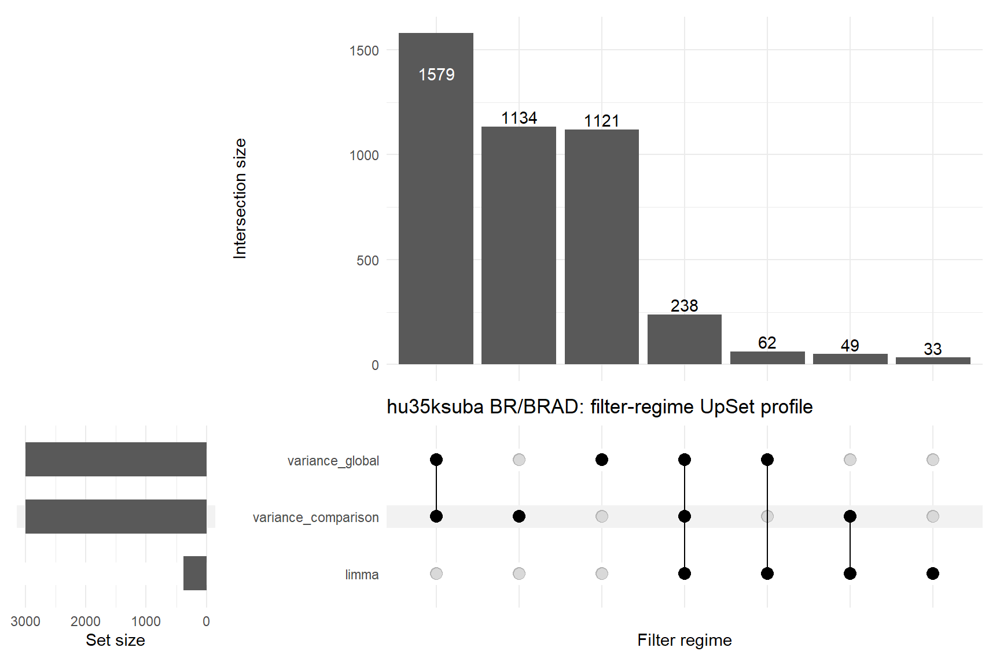
| Metric | Value |
|---|---|
| Filter regimes | 3 |
| Union probes | 4216 |
| Shared by all 3 | 238 |
| Shared fraction | 5.6% |
| limma probes | 382 |
| Variance comparison probes | 3000 |
| Variance global probes | 3000 |
| limma-only | 33 |
| Variance comparison-only | 1134 |
| Variance global-only | 1121 |
| Median Jaccard | 9.7% |
| Feature-space stability class | feature-space perturbation-sensitive |
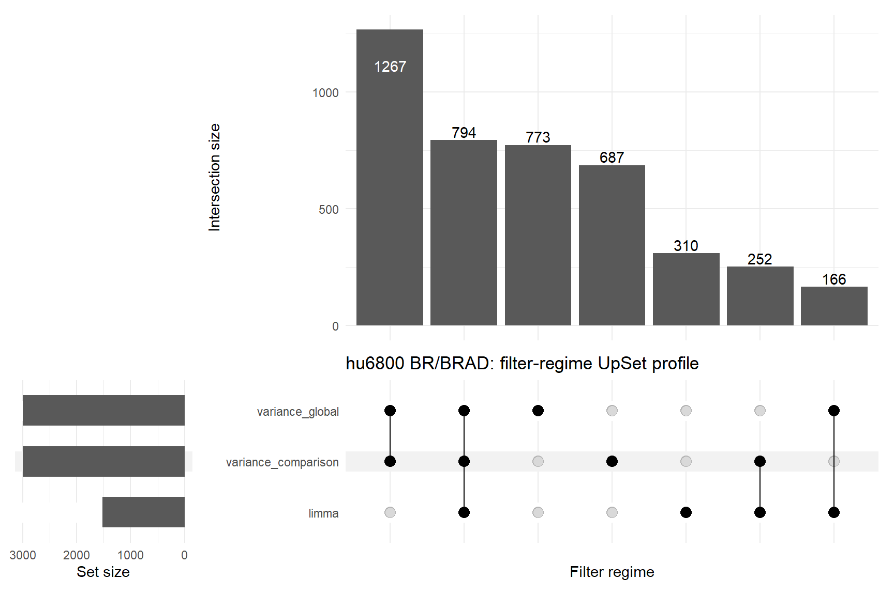
| Metric | Value |
|---|---|
| Filter regimes | 3 |
| Union probes | 4249 |
| Shared by all 3 | 794 |
| Shared fraction | 18.7% |
| limma probes | 1522 |
| Variance comparison probes | 3000 |
| Variance global probes | 3000 |
| limma-only | 310 |
| Variance comparison-only | 687 |
| Variance global-only | 773 |
| Median Jaccard | 30.1% |
| Feature-space stability class | feature-space perturbation-sensitive |
BR/BRAD: Structural Grammar
This tab converts the structure-specific warehouse record into a compact interpretive grammar for the selected comparison. Biological annotations remain as functional overlays on the structural state rather than causal pathway assignments.
Archetypal state
The system occupies an expansion-dominant perturbational state.
Modal Quadrant: QI
Quadrant Stability Fraction: 1.000
Archetype Label: Stable QI
Archetype Stability: Cross chip cross filter stable
Structural Confidence: Low
Structural interpretation
BR/BRAD: The system occupies an expansion-dominant perturbational state.
The structural pattern combines the following reader-level calls:
- Tumor manifold expands relative to the normal reference state.
- Expression geometry becomes more constrained or elongated.
- Spectral mass shifts away from dominant excess components.
- Variance is spread across more spectral components.
Normal and tumor samples separate in latent space.
Structural geometry
Tumor manifold expands relative to the normal reference state.
Effective-Rank Δ: 0.783
Expression geometry becomes more constrained or elongated.
Kappa Δ: 31.495
Spectral mass shifts away from dominant excess components.
MP Excess Spectral Mass Δ: -60.915
Variance is spread across more spectral components.
MP Participation-Ratio Δ: 2.622
Latent geometry
Normal and tumor samples separate in latent space.
Latent Centroid Distance: 38.952
Biological structural calls
| biological_structural_call | n_terms |
|---|---|
| Concordant compression | 32 |
| Concordant expansion | 19 |
Dominant GO semantic blocks
| semantic_block_name | n_terms | n_sig_complexity | n_sig_entropy_spectral | total_sig |
|---|---|---|---|---|
| protein binding | 168 | 11 | 17 | 28 |
| molecular function regulator activity | 45 | 5 | 14 | 19 |
| molecular_function | 81 | 6 | 10 | 16 |
| signaling receptor binding | 53 | 2 | 14 | 16 |
| protein-macromolecule adaptor activity | 38 | 5 | 9 | 14 |
| enzyme binding | 68 | 5 | 8 | 13 |
| positive regulation of cytokine production | 47 | 5 | 7 | 12 |
| biological_process | 69 | 5 | 6 | 11 |
Top GO annotation examples
| mode | term | semantic_block | structural_call | joint_rank |
|---|---|---|---|---|
| GO_BP | negative regulation of amyloid-beta formation | negative regulation of protein metabolic process | Concordant compression | 600.000 |
| GO_BP | tube development | tube development | Concordant expansion | 600.000 |
| GO_BP | protein homotetramerization | protein-containing complex assembly | Concordant compression | 600.000 |
| GO_BP | regulation of angiogenesis | regulation of anatomical structure morphogenesis | Concordant compression | 600.000 |
| GO_MF | protein domain specific binding | protein binding | Concordant expansion | 600.000 |
| GO_BP | regulation of long-term synaptic potentiation | modulation of chemical synaptic transmission | Concordant compression | 302.000 |
| GO_MF | calcium channel activity | monoatomic cation channel activity | Concordant compression | 302.000 |
| GO_BP | response to lipopolysaccharide | response to lipid | Concordant expansion | 302.000 |
| GO_BP | positive regulation of microtubule nucleation | regulation of cytoskeleton organization | Concordant compression | 302.000 |
| GO_BP | positive regulation of glycogen biosynthetic process | regulation of small molecule metabolic process | Concordant compression | 302.000 |
| GO_BP | regulation of GTPase activity | regulation of catalytic activity | Concordant compression | 302.000 |
| GO_BP | transcription, DNA-templated | DNA-templated transcription | Concordant expansion | 302.000 |
KEGG program overlay
| term | structural_call | joint_rank |
|---|---|---|
| Pancreatic secretion | Concordant compression | 301.398 |
| Apoptosis | Concordant compression | 3.523 |
| ErbB signaling pathway | Concordant compression | 3.046 |
| Endocytosis | Concordant expansion | 2.921 |
Hallmark / MSigDB program overlay
No warehouse rows available for this comparison.
Interpretive caution
These annotations identify functional systems that co-occur with the structural state. They should be read as structural-functional annotation, not as causal pathway assignment.
BR/BRAD: Structural Phenotype
This section summarizes the integrated structural phenotype across platform and feature-projection contexts. The first table is oriented as a descriptor-by-context matrix so that projection-sensitive structural shifts can be read horizontally across platform/projection runs.
Integrated structural phenotype
| Descriptor | hu35ksuba limma |
hu35ksuba var-comp |
hu35ksuba var-global |
hu6800 limma |
hu6800 var-comp |
hu6800 var-global |
|---|---|---|---|---|---|---|
| Complexity: Δ Effective Rank | 0.770 | 1.150 | 1.070 | 0.470 | 0.640 | 0.600 |
| Complexity: Δ κ | 23.440 | -0.570 | 4.910 | 68.600 | 45.390 | 47.200 |
| Entropy: Δ Spectral Entropy | 0.606 | 0.781 | 0.729 | 0.429 | 0.562 | 0.513 |
| Entropy: Δ Shannon Entropy | 1.144 | 1.143 | 1.140 | 1.146 | 1.145 | 1.143 |
| MP: Δ Spectral Entropy | 1.085 | 1.003 | 0.921 | 0.710 | 0.643 | 0.737 |
| MP: Δ Participation Ratio | 3.689 | 3.442 | 3.529 | 1.683 | 1.342 | 2.045 |
| Latent: Δ Participation Ratio | 1.523 | 1.523 | 1.523 | 1.523 | 1.523 | 1.523 |
| Latent: Δ Eigenvalue Entropy | 0.718 | 0.718 | 0.718 | 0.718 | 0.718 | 0.718 |
| Latent: Centroid Distance | 38.952 | 38.952 | 38.952 | 38.952 | 38.952 | 38.952 |
Metric-level summary
| engine | Metric | n_runs | mean_value | median_value | n_tumor_greater | n_tumor_lower |
|---|---|---|---|---|---|---|
| complexity | Composite Kappa | 6 | 41.762 | 43.040 | 4 | 2 |
| complexity | Effrank | 6 | 0.783 | 0.705 | 6 | 0 |
| complexity | Kappa | 6 | 31.495 | 34.415 | 5 | 1 |
| complexity | Sparsity | 6 | 0.000 | 0.000 | 0 | 0 |
| entropy | Shannon | 6 | 1.144 | 1.144 | 6 | 0 |
| entropy | Spectral | 6 | 0.603 | 0.584 | 6 | 0 |
| latent | Centroid Distance | 1 | 38.952 | 38.952 | 1 | 0 |
| latent | Latent Eig Entropy | 1 | 0.718 | 0.718 | 1 | 0 |
| latent | Latent Pr | 1 | 1.523 | 1.523 | 1 | 0 |
| mp_spectral | Excess Spectral Mass | 6 | -60.915 | -43.685 | 2 | 4 |
| mp_spectral | Largest Eigenvalue Fraction | 6 | -0.229 | -0.217 | 0 | 6 |
| mp_spectral | Participation Ratio | 6 | 2.622 | 2.744 | 6 | 0 |
| mp_spectral | Spectral Entropy | 6 | 0.850 | 0.829 | 6 | 0 |
Complexity Engine
The complexity engine is reported using all probes retained after the active feature-projection filter. The omitted gene_set_mode field is therefore implicitly FULL for this tab and is not shown as a separate table column.
Complexity descriptor matrix
| Metric | hu35ksuba limma |
hu35ksuba var-comp |
hu35ksuba var-global |
hu6800 limma |
hu6800 var-comp |
hu6800 var-global |
|---|---|---|---|---|---|---|
| Shared Probes | 382.000 | 3000.000 | 3000.000 | 1522.000 | 3000.000 | 3000.000 |
| Normal Samples | 5.000 | 5.000 | 5.000 | 5.000 | 5.000 | 5.000 |
| Tumor Samples | 11.000 | 11.000 | 11.000 | 11.000 | 11.000 | 11.000 |
| κ Normal | 85.310 | 92.980 | 86.610 | 76.160 | 76.040 | 74.500 |
| κ Tumor | 108.750 | 92.410 | 91.520 | 144.760 | 121.430 | 121.700 |
| Δ κ | 23.440 | -0.570 | 4.910 | 68.600 | 45.390 | 47.200 |
| Effective Rank Normal | 1.470 | 1.600 | 1.620 | 1.350 | 1.350 | 1.390 |
| Effective Rank Tumor | 2.240 | 2.750 | 2.690 | 1.820 | 1.990 | 1.990 |
| Δ Effective Rank | 0.770 | 1.150 | 1.070 | 0.470 | 0.640 | 0.600 |
| Δ Sparsity | 0.000 | 0.000 | 0.000 | 0.000 | 0.000 | 0.000 |
| Direction | gained | lost | gained | gained | gained | gained |
| Permutation p | 0.990 | 1.000 | 0.980 | 0.530 | 0.850 | 0.800 |
| Permutation FDR | 0.990 | 1.000 | 1.000 | 0.792 | 0.997 | 1.000 |
| Status | ok | ok | ok | ok | ok | ok |
Entropy Engine
The entropy engine is reported using all probes retained after the active feature-projection filter. The omitted gene_set_mode field is therefore implicitly FULL for this tab and is not shown as a separate table column.
Entropy descriptor matrix
| Metric | hu35ksuba limma |
hu35ksuba var-comp |
hu35ksuba var-global |
hu6800 limma |
hu6800 var-comp |
hu6800 var-global |
|---|---|---|---|---|---|---|
| Covariance Space | sample | sample | sample | sample | sample | sample |
| Shared Probes | 382 | 3000 | 3000 | 1522 | 3000 | 3000 |
| Shannon Entropy Normal | 10.874 | 13.848 | 13.852 | 12.863 | 13.842 | 13.845 |
| Shannon Entropy Tumor | 12.018 | 14.991 | 14.992 | 14.009 | 14.987 | 14.988 |
| Δ Shannon Entropy | 1.144 | 1.143 | 1.14 | 1.146 | 1.145 | 1.143 |
| Shannon Direction | strongly chaotic | strongly chaotic | strongly chaotic | strongly chaotic | strongly chaotic | strongly chaotic |
| Spectral Entropy Normal | 0.56 | 0.678 | 0.7 | 0.435 | 0.433 | 0.479 |
| Spectral Entropy Tumor | 1.166 | 1.459 | 1.429 | 0.864 | 0.995 | 0.992 |
| Δ Spectral Entropy | 0.606 | 0.781 | 0.729 | 0.429 | 0.562 | 0.513 |
| Spectral Direction | strongly chaotic | strongly chaotic | strongly chaotic | mildly chaotic | strongly chaotic | strongly chaotic |
| Spectral Permutation p | 0.05 | 0 | 0 | 0.1 | 0.05 | 0.05 |
| Spectral Permutation FDR | 0.13 | 0 | 0 | 0.3 | 0.162 | 0.149 |
| Status | ok | ok | ok | ok | ok | ok |
MP Spectral Engine
The MP spectral engine is reported using all probes retained after the active feature-projection filter. The omitted gene_set_mode field is therefore implicitly FULL for this tab and is not shown as a separate table column.
MP spectral descriptor matrix
| Metric | hu35ksuba limma |
hu35ksuba var-comp |
hu35ksuba var-global |
hu6800 limma |
hu6800 var-comp |
hu6800 var-global |
|---|---|---|---|---|---|---|
| Normal Samples | 5 | 5 | 5 | 5 | 5 | 5 |
| Tumor Samples | 11 | 11 | 11 | 11 | 11 | 11 |
| Normal Features | 382 | 3000 | 3000 | 1522 | 3000 | 3000 |
| Tumor Features | 382 | 3000 | 3000 | 1522 | 3000 | 3000 |
| Δ Largest Eigenvalue Fraction | -0.38 | -0.349 | -0.292 | -0.132 | -0.083 | -0.141 |
| Δ Spikes | 2 | 2 | 2 | 1 | 0 | 1 |
| Δ Spike Fraction | 0.005 | 0.001 | 0.001 | 0.001 | 0 | 0 |
| Δ Excess Spectral Mass | -73.527 | -290.41 | -123.915 | 47.286 | 88.921 | -13.842 |
| Δ Spectral Entropy | 1.085 | 1.003 | 0.921 | 0.71 | 0.643 | 0.737 |
| Δ Participation Ratio | 3.689 | 3.442 | 3.529 | 1.683 | 1.342 | 2.045 |
| Paired Status | ok | ok | ok | ok | ok | ok |
| chip | filter_regime | latent_model_id | n_normal | n_tumor | pr_normal | pr_tumor | pr_delta | eig_entropy_normal | eig_entropy_tumor | eig_entropy_delta | anisotropy_delta | radius_delta | centroid_distance |
|---|---|---|---|---|---|---|---|---|---|---|---|---|---|
| hu35ksuba | variance_global | hu35ksuba_variance_global_top3000_vae_z10 | 5 | 11 | 1.687 | 3.211 | 1.523 | 0.71 | 1.428 | 0.718 | -0.266 | 3.114 | 38.952 |
This section reports the quadrant-level perturbational state of the selected normal/tumor comparison. The first map places the comparison-level centroid in the broader atlas of cancer comparisons. The second map shows the six platform × feature-projection assignments that determine the comparison’s quadrant stability.
Global comparison position map
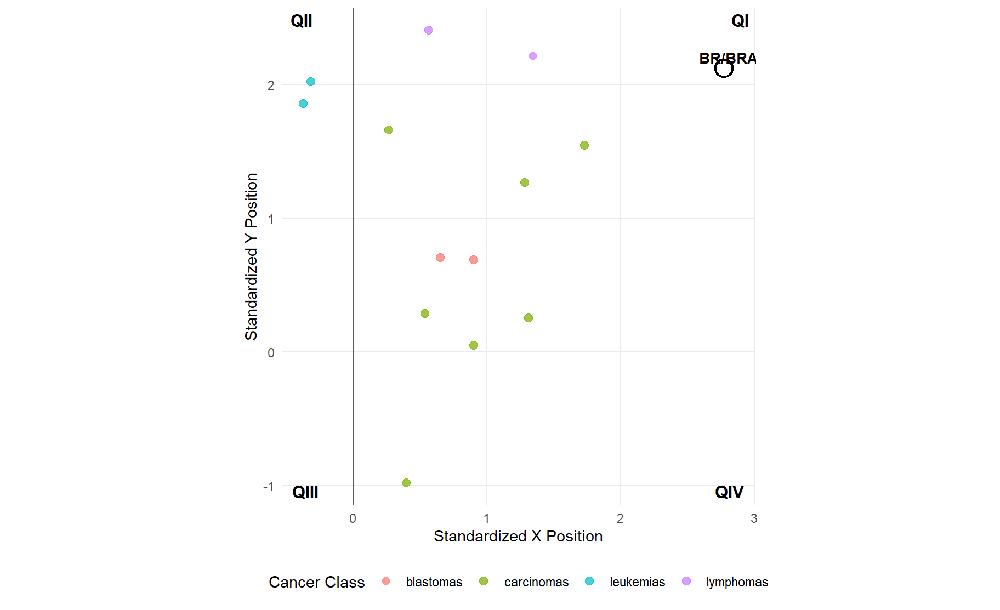
Assignment stability map
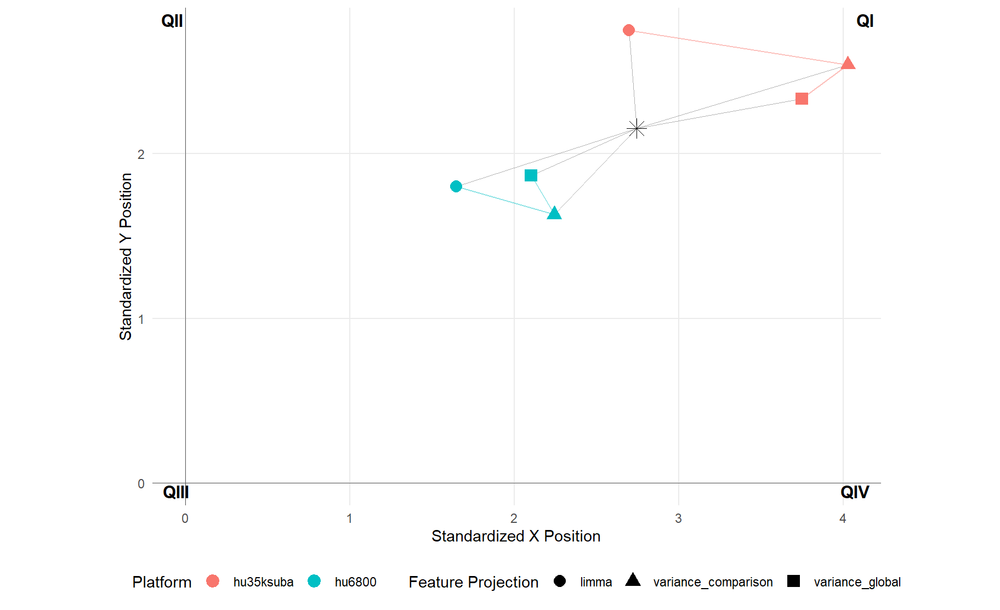
| Platform | Feature Projection | Perturbational State | Structural Interpretation | Assignment Confidence | X Descriptor | Y Descriptor | Std. X Position | Std. Y Position | Boundary Margin | Directional Agreement |
|---|---|---|---|---|---|---|---|---|---|---|
| hu35ksuba | limma | QI | coordinated structural expansion | high | complexity__effrank_delta | mp__spectral_entropy_delta | 2.696 | 2.750 | 2.696 | 100.0% |
| hu35ksuba | variance_comparison | QI | coordinated structural expansion | high | complexity__effrank_delta | mp__spectral_entropy_delta | 4.027 | 2.542 | 2.542 | 100.0% |
| hu35ksuba | variance_global | QI | coordinated structural expansion | high | complexity__effrank_delta | mp__spectral_entropy_delta | 3.747 | 2.334 | 2.334 | 100.0% |
| hu6800 | limma | QI | coordinated structural expansion | high | complexity__effrank_delta | mp__spectral_entropy_delta | 1.646 | 1.800 | 1.646 | 100.0% |
| hu6800 | variance_comparison | QI | coordinated structural expansion | high | complexity__effrank_delta | mp__spectral_entropy_delta | 2.241 | 1.630 | 1.630 | 100.0% |
| hu6800 | variance_global | QI | coordinated structural expansion | high | complexity__effrank_delta | mp__spectral_entropy_delta | 2.101 | 1.868 | 1.868 | 100.0% |
| Comparison | Assignments | Platforms | Feature Projections | Observed Quadrants | Modal Perturbational State | Modal Stability | Fully Stable | High-Confidence Share | Median Boundary Margin | Stability Class |
|---|---|---|---|---|---|---|---|---|---|---|
| BR/BRAD | 6 | 2 | 3 | 1 | QI | 100.0% | Yes | 100.0% | 2.101 | cross-chip/cross-filter stable |
Reading guide. QI, QII, QIII, and QIV denote perturbational states in the standardized structural coordinate system. Std. X and Std. Y are report-level structural coordinates, not sample-level PCA axes. Boundary margin is the standardized distance from the nearest quadrant boundary; larger values indicate assignments farther from sign-transition boundaries. Directional agreement is the fraction of contributing structural engines supporting the same directional sign pattern. Modal stability is the fraction of platform/filter assignments occupying the dominant perturbational state.
Cross-engine directional concordance
| Metric | hu35ksuba limma |
hu35ksuba var-comp |
hu35ksuba var-global |
hu6800 limma |
hu6800 var-comp |
hu6800 var-global |
|---|---|---|---|---|---|---|
| Complexity Direction | positive | positive | positive | positive | positive | positive |
| Entropy Direction | positive | positive | positive | positive | positive | positive |
| MP Direction | positive | positive | positive | positive | positive | positive |
| Latent Direction | positive | positive | positive | positive | positive | positive |
| Metrics Available | 4 | 4 | 4 | 4 | 4 | 4 |
| Positive Metrics | 4 | 4 | 4 | 4 | 4 | 4 |
| Negative Metrics | 0 | 0 | 0 | 0 | 0 | 0 |
| Majority Direction | positive | positive | positive | positive | positive | positive |
| Agreement Fraction | 1 | 1 | 1 | 1 | 1 | 1 |
Cross-engine discordance archetypes
| Metric | hu35ksuba limma |
hu35ksuba var-comp |
hu35ksuba var-global |
hu6800 limma |
hu6800 var-comp |
hu6800 var-global |
|---|---|---|---|---|---|---|
| Complexity Direction | positive | positive | positive | positive | positive | positive |
| Entropy Direction | positive | positive | positive | positive | positive | positive |
| MP Direction | positive | positive | positive | positive | positive | positive |
| Latent Direction | positive | positive | positive | positive | positive | positive |
| Modal Direction | positive | positive | positive | positive | positive | positive |
| Agreement Fraction | 1 | 1 | 1 | 1 | 1 | 1 |
| Discordance Class | full_agreement | full_agreement | full_agreement | full_agreement | full_agreement | full_agreement |
| Engine Coverage | four_engine_overlay | four_engine_overlay | four_engine_overlay | four_engine_overlay | four_engine_overlay | four_engine_overlay |
| Discordance Archetype | full_four_engine_agreement | full_four_engine_agreement | full_four_engine_agreement | full_four_engine_agreement | full_four_engine_agreement | full_four_engine_agreement |
| comparison | n_assignments | modal_quadrant | modal_quadrant_fraction | mean_quadrant_margin | median_quadrant_margin | min_quadrant_margin | chip_instability_fraction | filter_instability_fraction | x_sign_flips | y_sign_flips | both_axis_flips | total_boundary_crossings | robustness_class | structural_confidence |
|---|---|---|---|---|---|---|---|---|---|---|---|---|---|---|
| BR/BRAD | 6 | QI | 0.667 | 0.532 | 0.484 | 0.229 | 0.667 | 0.5 | 1 | 0 | 0 | 1 | single_axis_flipper | low |
| Metric | hu35ksuba limma |
hu35ksuba var-comp |
hu35ksuba var-global |
hu6800 limma |
hu6800 var-comp |
hu6800 var-global |
|---|---|---|---|---|---|---|
| Robustness Quadrant | QI | QII | QII | QI | QI | QI |
| X-Axis Robustness | 0.229 | -0.434 | -0.434 | 0.533 | 0.780 | 0.780 |
| Y-Axis Robustness | 1.106 | 1.241 | 1.241 | 0.799 | 0.969 | 0.969 |
| Distance to X-Axis | 1.106 | 1.241 | 1.241 | 0.799 | 0.969 | 0.969 |
| Distance to Y-Axis | 0.229 | 0.434 | 0.434 | 0.533 | 0.780 | 0.780 |
| Distance to Origin | 1.129 | 1.315 | 1.315 | 0.960 | 1.244 | 1.244 |
| Quadrant Margin | 0.229 | 0.434 | 0.434 | 0.533 | 0.780 | 0.780 |
| X Sign | + | - | - | + | + | + |
| Y Sign | + | + | + | + | + | + |
BR/BRAD: GO Semantic Metadata
The GO semantic layer summarizes functional annotation landscapes projected onto transcriptomic structural geometry. These tables group GO BP and GO MF terms into semantic blocks; they should be read as annotation topology, not as direct mechanistic inference.
GO semantic coverage
| gene_set_mode | n_context_rows | n_semantic_blocks | n_terms | n_sig_complexity | n_sig_entropy_spectral | median_shared_probes |
|---|---|---|---|---|---|---|
| GO_BP | 2411 | 332 | 3461 | 258 | 471 | 8.000 |
| GO_MF | 927 | 48 | 1282 | 107 | 150 | 10.000 |
GO semantic panels
Semantic context summary
| n_semantic_blocks | n_terms | n_sig_complexity | n_sig_entropy_spectral | median_shared_probes |
|---|---|---|---|---|
| 76 | 97 | 11 | 15 | 7.000 |
Dominant GO semantic blocks
| semantic_block_name | n_terms | n_sig_complexity | n_sig_entropy_spectral | total_sig | mean_shared_probes |
|---|---|---|---|---|---|
| positive regulation of RNA metabolic process | 3 | 2 | 0 | 2 | 23.000 |
| RNA processing | 2 | 1 | 1 | 2 | 12.500 |
| protein-containing complex assembly | 1 | 1 | 1 | 2 | 7.000 |
| cellular response to growth factor stimulus | 1 | 1 | 0 | 1 | 5.000 |
| monoatomic cation transmembrane transport | 1 | 1 | 0 | 1 | 7.000 |
| monoatomic ion transmembrane transport | 1 | 1 | 0 | 1 | 5.000 |
| monoatomic ion transport | 1 | 1 | 0 | 1 | 10.000 |
| neuron differentiation | 1 | 1 | 0 | 1 | 5.000 |
| positive regulation of gene expression | 1 | 1 | 0 | 1 | 14.000 |
| response to abiotic stimulus | 1 | 1 | 0 | 1 | 7.000 |
| DNA metabolic process | 1 | 0 | 1 | 1 | 5.000 |
| apoptotic process | 1 | 0 | 1 | 1 | 20.000 |
| biological_process | 1 | 0 | 1 | 1 | 5.000 |
| cell differentiation | 1 | 0 | 1 | 1 | 5.000 |
| cellular response to stress | 1 | 0 | 1 | 1 | 6.000 |
| gene expression | 1 | 0 | 1 | 1 | 8.000 |
| organelle assembly | 1 | 0 | 1 | 1 | 5.000 |
| response to abiotic stimulus | 1 | 0 | 1 | 1 | 5.000 |
| response to chemical | 1 | 0 | 1 | 1 | 7.000 |
| ribonucleoprotein complex biogenesis | 1 | 0 | 1 | 1 | 5.000 |
Semantic context summary
| n_semantic_blocks | n_terms | n_sig_complexity | n_sig_entropy_spectral | median_shared_probes |
|---|---|---|---|---|
| 30 | 71 | 4 | 6 | 9.000 |
Dominant GO semantic blocks
| semantic_block_name | n_terms | n_sig_complexity | n_sig_entropy_spectral | total_sig | mean_shared_probes |
|---|---|---|---|---|---|
| RNA binding | 1 | 1 | 0 | 1 | 50.000 |
| carbohydrate derivative binding | 1 | 1 | 0 | 1 | 11.000 |
| molecular_function | 1 | 1 | 0 | 1 | 18.000 |
| protein binding | 1 | 1 | 0 | 1 | 281.000 |
| protein kinase activity | 2 | 0 | 1 | 1 | 7.000 |
| cytoskeletal protein binding | 1 | 0 | 1 | 1 | 5.000 |
| enzyme binding | 1 | 0 | 1 | 1 | 5.000 |
| molecular function regulator activity | 1 | 0 | 1 | 1 | 6.000 |
| molecular_function | 1 | 0 | 1 | 1 | 8.000 |
| protein-macromolecule adaptor activity | 1 | 0 | 1 | 1 | 5.000 |
| cation binding | 3 | 0 | 0 | 0 | 27.000 |
| RNA binding | 2 | 0 | 0 | 0 | 5.000 |
| hydrolase activity | 2 | 0 | 0 | 0 | 11.000 |
| molecular_function | 2 | 0 | 0 | 0 | 21.500 |
| protein binding | 2 | 0 | 0 | 0 | 23.000 |
| protein-macromolecule adaptor activity | 2 | 0 | 0 | 0 | 9.000 |
| DNA binding | 1 | 0 | 0 | 0 | 15.000 |
| DNA binding | 1 | 0 | 0 | 0 | 13.000 |
| DNA binding | 1 | 0 | 0 | 0 | 45.000 |
| DNA binding | 1 | 0 | 0 | 0 | 10.000 |
Semantic context summary
| n_semantic_blocks | n_terms | n_sig_complexity | n_sig_entropy_spectral | median_shared_probes |
|---|---|---|---|---|
| 292 | 1077 | 139 | 92 | 8.000 |
Dominant GO semantic blocks
| semantic_block_name | n_terms | n_sig_complexity | n_sig_entropy_spectral | total_sig | mean_shared_probes |
|---|---|---|---|---|---|
| regulation of cellular response to stress | 6 | 3 | 0 | 3 | 12.333 |
| protein catabolic process | 5 | 3 | 0 | 3 | 34.000 |
| ribonucleoprotein complex biogenesis | 5 | 3 | 0 | 3 | 12.600 |
| positive regulation of RNA metabolic process | 7 | 2 | 1 | 3 | 57.714 |
| protein modification by small protein conjugation or removal | 6 | 2 | 1 | 3 | 35.833 |
| DNA-templated transcription | 4 | 2 | 1 | 3 | 13.250 |
| modulation of chemical synaptic transmission | 3 | 2 | 1 | 3 | 7.667 |
| regulation of DNA-templated transcription | 3 | 2 | 1 | 3 | 143.667 |
| intracellular signal transduction | 5 | 2 | 0 | 2 | 22.600 |
| negative regulation of nucleobase-containing compound metabolic process | 5 | 2 | 0 | 2 | 61.800 |
| RNA processing | 4 | 2 | 0 | 2 | 39.000 |
| protein phosphorylation | 4 | 2 | 0 | 2 | 18.750 |
| chromatin organization | 2 | 2 | 0 | 2 | 87.000 |
| lipid metabolic process | 2 | 2 | 0 | 2 | 55.500 |
| positive regulation of intracellular signal transduction | 6 | 1 | 1 | 2 | 18.833 |
| energy derivation by oxidation of organic compounds | 3 | 1 | 1 | 2 | 9.333 |
| regulation of leukocyte differentiation | 2 | 1 | 1 | 2 | 7.500 |
| epithelial cell differentiation | 1 | 1 | 1 | 2 | 12.000 |
| multicellular organismal-level homeostasis | 1 | 1 | 1 | 2 | 18.000 |
| phospholipid metabolic process | 1 | 1 | 1 | 2 | 7.000 |
Semantic context summary
| n_semantic_blocks | n_terms | n_sig_complexity | n_sig_entropy_spectral | median_shared_probes |
|---|---|---|---|---|
| 46 | 390 | 63 | 34 | 10.000 |
Dominant GO semantic blocks
| semantic_block_name | n_terms | n_sig_complexity | n_sig_entropy_spectral | total_sig | mean_shared_probes |
|---|---|---|---|---|---|
| RNA binding | 5 | 3 | 0 | 3 | 80.800 |
| protein binding | 3 | 2 | 1 | 3 | 26.333 |
| molecular_function | 2 | 2 | 1 | 3 | 126.500 |
| protein-macromolecule adaptor activity | 3 | 1 | 2 | 3 | 49.000 |
| cytoskeletal protein binding | 4 | 2 | 0 | 2 | 10.500 |
| enzyme binding | 3 | 2 | 0 | 2 | 13.333 |
| heterocyclic compound binding | 3 | 2 | 0 | 2 | 103.000 |
| protein binding | 2 | 2 | 0 | 2 | 186.000 |
| cation binding | 3 | 1 | 1 | 2 | 228.000 |
| acyltransferase activity | 2 | 1 | 1 | 2 | 41.000 |
| binding | 2 | 1 | 1 | 2 | 55.500 |
| protein binding | 1 | 1 | 1 | 2 | 27.000 |
| transcription factor binding | 1 | 1 | 1 | 2 | 41.000 |
| molecular function regulator activity | 5 | 1 | 0 | 1 | 13.600 |
| DNA binding | 4 | 1 | 0 | 1 | 87.500 |
| phosphoric ester hydrolase activity | 4 | 1 | 0 | 1 | 14.500 |
| DNA binding | 3 | 1 | 0 | 1 | 39.667 |
| acyltransferase activity | 3 | 1 | 0 | 1 | 25.333 |
| protein kinase activity | 3 | 1 | 0 | 1 | 35.000 |
| transcription factor binding | 3 | 1 | 0 | 1 | 7.000 |
Semantic context summary
| n_semantic_blocks | n_terms | n_sig_complexity | n_sig_entropy_spectral | median_shared_probes |
|---|---|---|---|---|
| 262 | 789 | 38 | 241 | 8.000 |
Dominant GO semantic blocks
| semantic_block_name | n_terms | n_sig_complexity | n_sig_entropy_spectral | total_sig | mean_shared_probes |
|---|---|---|---|---|---|
| positive regulation of cytokine production | 8 | 1 | 4 | 5 | 9.625 |
| positive regulation of RNA metabolic process | 4 | 1 | 4 | 5 | 68.250 |
| G protein-coupled receptor signaling pathway | 7 | 0 | 5 | 5 | 24.286 |
| negative regulation of nucleobase-containing compound metabolic process | 4 | 0 | 4 | 4 | 53.250 |
| protein-containing complex assembly | 3 | 1 | 2 | 3 | 6.333 |
| heart morphogenesis | 2 | 1 | 2 | 3 | 5.500 |
| positive regulation of cell differentiation | 2 | 1 | 2 | 3 | 15.500 |
| intracellular signal transduction | 4 | 0 | 3 | 3 | 17.750 |
| monoatomic cation homeostasis | 3 | 1 | 1 | 2 | 9.000 |
| DNA-templated transcription | 2 | 1 | 1 | 2 | 15.000 |
| cellular response to cytokine stimulus | 2 | 1 | 1 | 2 | 9.000 |
| chromosome organization | 2 | 1 | 1 | 2 | 7.000 |
| proteolysis | 2 | 1 | 1 | 2 | 24.000 |
| alcohol metabolic process | 1 | 1 | 1 | 2 | 14.000 |
| chemotaxis | 1 | 1 | 1 | 2 | 15.000 |
| negative regulation of response to external stimulus | 1 | 1 | 1 | 2 | 6.000 |
| positive regulation of cell adhesion | 1 | 1 | 1 | 2 | 5.000 |
| regulation of cell population proliferation | 1 | 1 | 1 | 2 | 5.000 |
| modulation of chemical synaptic transmission | 4 | 0 | 2 | 2 | 8.000 |
| negative regulation of multicellular organismal process | 4 | 0 | 2 | 2 | 6.000 |
Semantic context summary
| n_semantic_blocks | n_terms | n_sig_complexity | n_sig_entropy_spectral | median_shared_probes |
|---|---|---|---|---|
| 44 | 305 | 16 | 72 | 9.417 |
Dominant GO semantic blocks
| semantic_block_name | n_terms | n_sig_complexity | n_sig_entropy_spectral | total_sig | mean_shared_probes |
|---|---|---|---|---|---|
| molecular function regulator activity | 6 | 0 | 4 | 4 | 19.667 |
| protein kinase activity | 4 | 0 | 4 | 4 | 24.500 |
| phosphoric ester hydrolase activity | 3 | 3 | 0 | 3 | 5.000 |
| DNA binding | 4 | 1 | 2 | 3 | 25.000 |
| cation binding | 3 | 0 | 3 | 3 | 124.333 |
| peptidase activity | 4 | 1 | 1 | 2 | 14.500 |
| monoatomic cation channel activity | 2 | 1 | 1 | 2 | 7.000 |
| carbohydrate derivative binding | 1 | 1 | 1 | 2 | 5.000 |
| protein binding | 1 | 1 | 1 | 2 | 5.000 |
| peptidase activity | 2 | 0 | 2 | 2 | 11.000 |
| transmembrane signaling receptor activity | 2 | 0 | 2 | 2 | 5.000 |
| RNA binding | 2 | 1 | 0 | 1 | 7.500 |
| RNA binding | 1 | 1 | 0 | 1 | 9.000 |
| cytoskeletal protein binding | 1 | 1 | 0 | 1 | 9.000 |
| lipid binding | 1 | 1 | 0 | 1 | 9.000 |
| molecular adaptor activity | 1 | 1 | 0 | 1 | 25.000 |
| molecular function regulator activity | 1 | 1 | 0 | 1 | 5.000 |
| molecular function regulator activity | 1 | 1 | 0 | 1 | 7.000 |
| molecular_function | 1 | 1 | 0 | 1 | 5.000 |
| enzyme binding | 4 | 0 | 1 | 1 | 23.500 |
Semantic context summary
| n_semantic_blocks | n_terms | n_sig_complexity | n_sig_entropy_spectral | median_shared_probes |
|---|---|---|---|---|
| 316 | 1498 | 70 | 123 | 9.000 |
Dominant GO semantic blocks
| semantic_block_name | n_terms | n_sig_complexity | n_sig_entropy_spectral | total_sig | mean_shared_probes |
|---|---|---|---|---|---|
| positive regulation of signal transduction | 6 | 1 | 2 | 3 | 6.833 |
| regulation of cellular response to stress | 6 | 2 | 0 | 2 | 12.000 |
| ribonucleoprotein complex biogenesis | 5 | 2 | 0 | 2 | 9.800 |
| cell surface receptor signaling pathway | 8 | 1 | 1 | 2 | 23.750 |
| translation | 7 | 1 | 1 | 2 | 34.857 |
| regulation of anatomical structure morphogenesis | 4 | 1 | 1 | 2 | 22.750 |
| lymphocyte differentiation | 3 | 1 | 1 | 2 | 9.333 |
| regulation of cell population proliferation | 3 | 1 | 1 | 2 | 8.000 |
| positive regulation of multicellular organismal process | 2 | 1 | 1 | 2 | 12.000 |
| regulation of cytoskeleton organization | 2 | 1 | 1 | 2 | 6.000 |
| negative regulation of protein metabolic process | 1 | 1 | 1 | 2 | 6.000 |
| regulation of catalytic activity | 1 | 1 | 1 | 2 | 5.000 |
| regulation of metal ion transport | 1 | 1 | 1 | 2 | 5.000 |
| behavior | 4 | 0 | 2 | 2 | 12.750 |
| response to lipid | 3 | 0 | 2 | 2 | 8.667 |
| negative regulation of response to external stimulus | 2 | 0 | 2 | 2 | 6.000 |
| positive regulation of cytokine production | 12 | 1 | 0 | 1 | 16.417 |
| regulation of intracellular signal transduction | 7 | 1 | 0 | 1 | 6.714 |
| chemical synaptic transmission | 6 | 1 | 0 | 1 | 15.000 |
| neuron projection development | 4 | 1 | 0 | 1 | 12.500 |
Semantic context summary
| n_semantic_blocks | n_terms | n_sig_complexity | n_sig_entropy_spectral | median_shared_probes |
|---|---|---|---|---|
| 48 | 516 | 24 | 38 | 10.500 |
Dominant GO semantic blocks
| semantic_block_name | n_terms | n_sig_complexity | n_sig_entropy_spectral | total_sig | mean_shared_probes |
|---|---|---|---|---|---|
| molecular function regulator activity | 7 | 1 | 2 | 3 | 32.714 |
| phosphoric ester hydrolase activity | 3 | 0 | 3 | 3 | 11.333 |
| signaling receptor binding | 1 | 1 | 1 | 2 | 11.000 |
| transcription factor binding | 1 | 1 | 1 | 2 | 6.000 |
| protein kinase activity | 5 | 1 | 0 | 1 | 27.800 |
| DNA binding | 2 | 1 | 0 | 1 | 21.500 |
| RNA binding | 2 | 1 | 0 | 1 | 7.500 |
| protein binding | 2 | 1 | 0 | 1 | 60.000 |
| protein-containing complex binding | 2 | 1 | 0 | 1 | 6.500 |
| protein-macromolecule adaptor activity | 2 | 1 | 0 | 1 | 9.500 |
| transcription factor binding | 2 | 1 | 0 | 1 | 8.500 |
| cation binding | 1 | 1 | 0 | 1 | 5.000 |
| channel activity | 1 | 1 | 0 | 1 | 5.000 |
| gated channel activity | 1 | 1 | 0 | 1 | 8.000 |
| lipid binding | 1 | 1 | 0 | 1 | 10.000 |
| molecular_function | 1 | 1 | 0 | 1 | 25.000 |
| oxidoreductase activity | 1 | 1 | 0 | 1 | 33.000 |
| oxidoreductase activity | 1 | 1 | 0 | 1 | 11.000 |
| oxidoreductase activity | 1 | 1 | 0 | 1 | 34.000 |
| protein binding | 1 | 1 | 0 | 1 | 6.000 |
This section embeds the biological structural-overlay module. Chips are treated as distinct observational systems, and filter regimes are treated as feature-space perturbations rather than pooled preprocessing settings.
BR/BRAD: Biological Gene-Set Structural Report
This report is exploratory and downstream of the structural-inference framework. It summarizes GO, KEGG, and MSigDB/Hallmark gene-set results associated with a single normal–tumor comparison. Biological terms are interpreted as annotations of structurally characterized tumor states, not as the primary evidentiary basis of the framework.
Report coverage
| comparison | alpha | enabled_gene_set_modes | n_biological_rows | n_skipped_chip_mode_gene_sets |
|---|---|---|---|---|
| BR/BRAD | 0.05 | GO_BP, GO_MF, KEGG, MSIGDB | 9908 | 16248 |
Context inventory
| comparison | chip | filter_regime | gene_set_mode | engine | n_terms | n_gene_sets | n_significant_complexity | n_significant_entropy_spectral | median_shared_probes |
|---|---|---|---|---|---|---|---|---|---|
| BR/BRAD | hu35ksuba | limma | GO_BP | complexity | 97 | 97 | 11 | 0 | 7 |
| BR/BRAD | hu35ksuba | limma | GO_BP | entropy | 97 | 97 | 0 | 15 | 7 |
| BR/BRAD | hu35ksuba | limma | GO_MF | complexity | 71 | 71 | 4 | 0 | 9 |
| BR/BRAD | hu35ksuba | limma | GO_MF | entropy | 71 | 71 | 0 | 6 | 9 |
| BR/BRAD | hu35ksuba | limma | KEGG | complexity | 1 | 1 | 1 | 0 | 20 |
| BR/BRAD | hu35ksuba | limma | KEGG | entropy | 1 | 1 | 0 | 0 | 20 |
| BR/BRAD | hu35ksuba | limma | MSIGDB | complexity | 3 | 3 | 0 | 0 | 10 |
| BR/BRAD | hu35ksuba | limma | MSIGDB | entropy | 3 | 3 | 0 | 0 | 10 |
| BR/BRAD | hu35ksuba | variance_top3000 | GO_BP | complexity | 1077 | 1077 | 139 | 0 | 8 |
| BR/BRAD | hu35ksuba | variance_top3000 | GO_BP | entropy | 1077 | 1077 | 0 | 92 | 8 |
| BR/BRAD | hu35ksuba | variance_top3000 | GO_MF | complexity | 390 | 390 | 63 | 0 | 10 |
| BR/BRAD | hu35ksuba | variance_top3000 | GO_MF | entropy | 390 | 390 | 0 | 34 | 10 |
| BR/BRAD | hu35ksuba | variance_top3000 | KEGG | complexity | 54 | 54 | 10 | 0 | 21 |
| BR/BRAD | hu35ksuba | variance_top3000 | KEGG | entropy | 54 | 54 | 0 | 3 | 21 |
| BR/BRAD | hu35ksuba | variance_top3000 | MSIGDB | complexity | 13 | 13 | 4 | 0 | 43 |
| BR/BRAD | hu35ksuba | variance_top3000 | MSIGDB | entropy | 13 | 13 | 0 | 0 | 43 |
| BR/BRAD | hu6800 | limma | GO_BP | complexity | 789 | 789 | 38 | 0 | 8 |
| BR/BRAD | hu6800 | limma | GO_BP | entropy | 789 | 789 | 0 | 241 | 8 |
| BR/BRAD | hu6800 | limma | GO_MF | complexity | 305 | 305 | 16 | 0 | 9 |
| BR/BRAD | hu6800 | limma | GO_MF | entropy | 305 | 305 | 0 | 72 | 9 |
| BR/BRAD | hu6800 | limma | KEGG | complexity | 57 | 57 | 3 | 0 | 23 |
| BR/BRAD | hu6800 | limma | KEGG | entropy | 57 | 57 | 0 | 25 | 23 |
| BR/BRAD | hu6800 | limma | MSIGDB | complexity | 13 | 13 | 1 | 0 | 37 |
| BR/BRAD | hu6800 | limma | MSIGDB | entropy | 13 | 13 | 0 | 8 | 37 |
| BR/BRAD | hu6800 | variance_top3000 | GO_BP | complexity | 1498 | 1498 | 70 | 0 | 9 |
| BR/BRAD | hu6800 | variance_top3000 | GO_BP | entropy | 1498 | 1498 | 0 | 123 | 9 |
| BR/BRAD | hu6800 | variance_top3000 | GO_MF | complexity | 516 | 516 | 24 | 0 | 10 |
| BR/BRAD | hu6800 | variance_top3000 | GO_MF | entropy | 516 | 516 | 0 | 38 | 10 |
| BR/BRAD | hu6800 | variance_top3000 | KEGG | complexity | 57 | 57 | 0 | 0 | 45 |
| BR/BRAD | hu6800 | variance_top3000 | KEGG | entropy | 57 | 57 | 0 | 3 | 45 |
| BR/BRAD | hu6800 | variance_top3000 | MSIGDB | complexity | 13 | 13 | 0 | 0 | 80 |
| BR/BRAD | hu6800 | variance_top3000 | MSIGDB | entropy | 13 | 13 | 0 | 0 | 80 |
Biological result panels
The panels below intentionally separate chips and filtering regimes. Chips are treated as distinct observational systems, and filter regimes are treated as feature-space perturbations rather than interchangeable preprocessing settings.
Context summary
| engine | n_rows | n_gene_sets | n_significant_complexity | n_significant_entropy_spectral | median_shared_probes |
|---|---|---|---|---|---|
| complexity | 97 | 97 | 11 | 0 | 7.000 |
| entropy | 97 | 97 | 0 | 15 | 7.000 |
Complexity signal plot
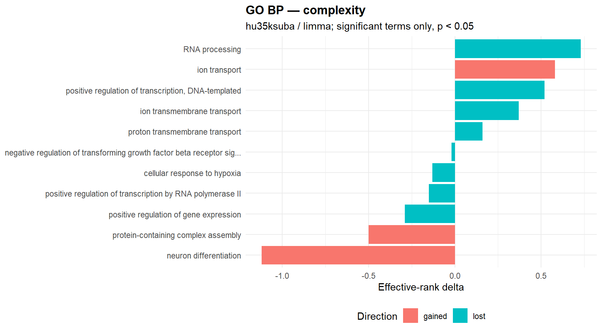
Entropy signal plot
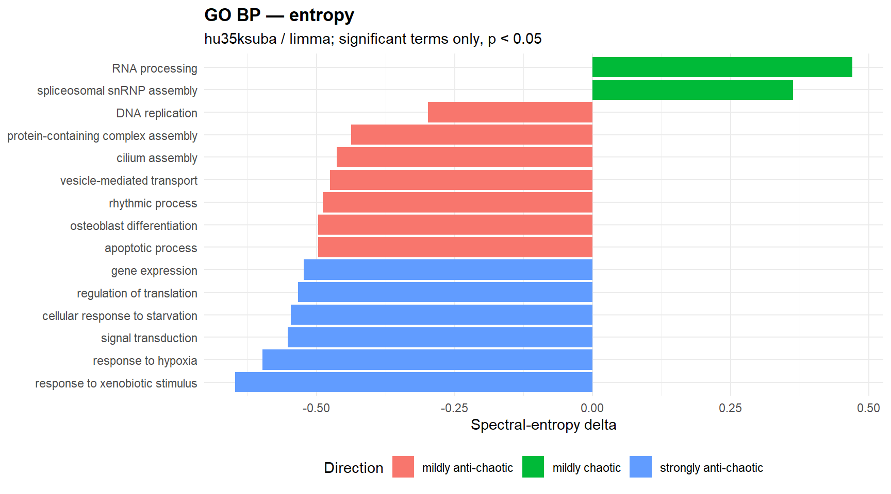
Significant complexity terms
| gene_set | semantic_block | n_shared_probes | effrank Δ | kappa Δ | direction | p_perm | status |
|---|---|---|---|---|---|---|---|
| neuron differentiation | neuron differentiation | 5 | -1.120 | 201.090 | gained | <0.001 | ok |
| cellular response to hypoxia | response to abiotic stimulus | 7 | -0.130 | -1832.240 | lost | <0.001 | ok |
| proton transmembrane transport | monoatomic cation transmembrane transport | 7 | 0.160 | -2121.140 | lost | 0.010 | ok |
| ion transmembrane transport | monoatomic ion transmembrane transport | 5 | 0.370 | -251.720 | lost | 0.020 | ok |
| positive regulation of transcription by RNA polymerase II | positive regulation of RNA metabolic process | 36 | -0.150 | -48.680 | lost | 0.020 | ok |
| ion transport | monoatomic ion transport | 10 | 0.580 | 763.230 | gained | 0.030 | ok |
| negative regulation of transforming growth factor beta receptor signaling pathway | cellular response to growth factor stimulus | 5 | -0.020 | -241.100 | lost | 0.030 | ok |
| RNA processing | RNA processing | 6 | 0.730 | -263.430 | lost | 0.040 | ok |
| positive regulation of transcription, DNA-templated | positive regulation of RNA metabolic process | 28 | 0.520 | -46.810 | lost | 0.040 | ok |
| protein-containing complex assembly | protein-containing complex assembly | 7 | -0.500 | 1154.250 | gained | 0.040 | ok |
| positive regulation of gene expression | positive regulation of gene expression | 14 | -0.290 | -209.260 | lost | 0.040 | ok |
Significant entropy terms
| gene_set | semantic_block | n_shared_probes | spectral Δ | shannon Δ | spectral_direction | p_perm_spectral | p_perm_shannon | status |
|---|---|---|---|---|---|---|---|---|
| cellular response to starvation | cellular response to stress | 6 | -0.546 | 0.011 | strongly anti-chaotic | <0.001 | NA | ok |
| spliceosomal snRNP assembly | ribonucleoprotein complex biogenesis | 5 | 0.363 | 0.011 | mildly chaotic | <0.001 | NA | ok |
| vesicle-mediated transport | vesicle-mediated transport | 12 | -0.475 | -0.005 | mildly anti-chaotic | 0.010 | NA | ok |
| DNA replication | DNA metabolic process | 5 | -0.298 | 0.002 | mildly anti-chaotic | 0.010 | NA | ok |
| apoptotic process | apoptotic process | 20 | -0.497 | 0.000 | mildly anti-chaotic | 0.020 | NA | ok |
| response to xenobiotic stimulus | response to chemical | 7 | -0.647 | 0.013 | strongly anti-chaotic | 0.030 | NA | ok |
| signal transduction | signal transduction | 23 | -0.552 | -0.002 | strongly anti-chaotic | 0.030 | NA | ok |
| RNA processing | RNA processing | 6 | 0.470 | 0.009 | mildly chaotic | 0.030 | NA | ok |
| response to hypoxia | response to abiotic stimulus | 5 | -0.598 | 0.006 | strongly anti-chaotic | 0.040 | NA | ok |
| regulation of translation | translation | 8 | -0.533 | -0.003 | strongly anti-chaotic | 0.040 | NA | ok |
| gene expression | gene expression | 8 | -0.523 | 0.005 | strongly anti-chaotic | 0.040 | NA | ok |
| osteoblast differentiation | cell differentiation | 5 | -0.497 | -0.004 | mildly anti-chaotic | 0.040 | NA | ok |
| rhythmic process | biological_process | 5 | -0.488 | -0.010 | mildly anti-chaotic | 0.040 | NA | ok |
| cilium assembly | organelle assembly | 5 | -0.463 | -0.001 | mildly anti-chaotic | 0.040 | NA | ok |
| protein-containing complex assembly | protein-containing complex assembly | 7 | -0.437 | 0.007 | mildly anti-chaotic | 0.040 | NA | ok |
Terms significant in both engines
| gene_set | semantic_block | n_shared_probes | complexity_effrank Δ | complexity_direction | complexity_p_perm | entropy_spectral Δ | entropy_spectral_direction | entropy_p_perm_spectral | joint_rank_score |
|---|---|---|---|---|---|---|---|---|---|
| RNA processing | RNA processing | 6 | 0.730 | lost | 0.040 | 0.470 | mildly chaotic | 0.030 | 2.921 |
| protein-containing complex assembly | protein-containing complex assembly | 7 | -0.500 | gained | 0.040 | -0.437 | mildly anti-chaotic | 0.040 | 2.796 |
GO semantic clusters
| semantic_cluster_id | semantic_block_name | n_rows | n_terms | n_sig_complexity | n_sig_entropy_spectral | mean_shared_probes |
|---|---|---|---|---|---|---|
| BP_GO_0051254_1 | positive regulation of RNA metabolic process | 6 | 3 | 2 | 0 | 23.000 |
| BP_GO_0006396_1 | RNA processing | 4 | 2 | 1 | 1 | 12.500 |
| BP_GO_0065003_6 | protein-containing complex assembly | 2 | 1 | 1 | 1 | 7.000 |
| BP_GO_0006259_2 | DNA metabolic process | 2 | 1 | 0 | 1 | 5.000 |
| BP_GO_0006412_1 | translation | 2 | 1 | 0 | 1 | 8.000 |
| BP_GO_0006811_1 | monoatomic ion transport | 2 | 1 | 1 | 0 | 10.000 |
| BP_GO_0006915_1 | apoptotic process | 2 | 1 | 0 | 1 | 20.000 |
| BP_GO_0007165_singleton_1 | signal transduction | 2 | 1 | 0 | 1 | 23.000 |
| BP_GO_0009628_1 | response to abiotic stimulus | 2 | 1 | 0 | 1 | 5.000 |
| BP_GO_0009628_18 | response to abiotic stimulus | 2 | 1 | 1 | 0 | 7.000 |
| BP_GO_0010467_singleton_1 | gene expression | 2 | 1 | 0 | 1 | 8.000 |
| BP_GO_0010628_1 | positive regulation of gene expression | 2 | 1 | 1 | 0 | 14.000 |
| BP_GO_0016192_2 | vesicle-mediated transport | 2 | 1 | 0 | 1 | 12.000 |
| BP_GO_0022613_3 | ribonucleoprotein complex biogenesis | 2 | 1 | 0 | 1 | 5.000 |
| BP_GO_0030154_1 | cell differentiation | 2 | 1 | 0 | 1 | 5.000 |
| BP_GO_0030182_1 | neuron differentiation | 2 | 1 | 1 | 0 | 5.000 |
| BP_GO_0033554_1 | cellular response to stress | 2 | 1 | 0 | 1 | 6.000 |
| BP_GO_0034220_1 | monoatomic ion transmembrane transport | 2 | 1 | 1 | 0 | 5.000 |
| BP_GO_0042221_3 | response to chemical | 2 | 1 | 0 | 1 | 7.000 |
| BP_GO_0070925_2 | organelle assembly | 2 | 1 | 0 | 1 | 5.000 |
Context summary
| engine | n_rows | n_gene_sets | n_significant_complexity | n_significant_entropy_spectral | median_shared_probes |
|---|---|---|---|---|---|
| complexity | 71 | 71 | 4 | 0 | 9.000 |
| entropy | 71 | 71 | 0 | 6 | 9.000 |
Complexity signal plot
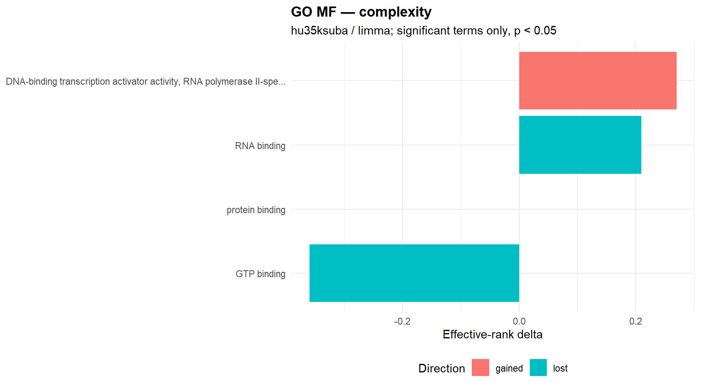
Entropy signal plot
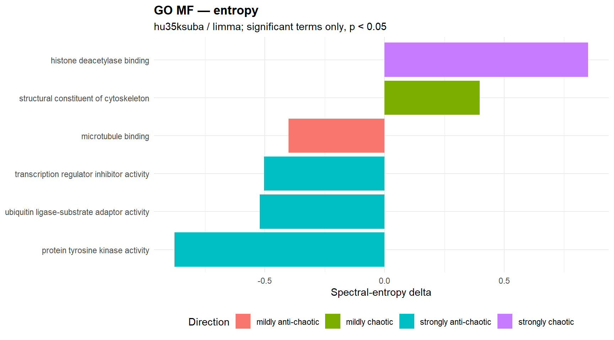
Significant complexity terms
| gene_set | semantic_block | n_shared_probes | effrank Δ | kappa Δ | direction | p_perm | status |
|---|---|---|---|---|---|---|---|
| DNA-binding transcription activator activity, RNA polymerase II-specific | molecular_function | 18 | 0.270 | 112.230 | gained | 0.010 | ok |
| protein binding | protein binding | 281 | 0.000 | -31.300 | lost | 0.010 | ok |
| GTP binding | carbohydrate derivative binding | 11 | -0.360 | -470.930 | lost | 0.030 | ok |
| RNA binding | RNA binding | 50 | 0.210 | -29.420 | lost | 0.030 | ok |
Significant entropy terms
| gene_set | semantic_block | n_shared_probes | spectral Δ | shannon Δ | spectral_direction | p_perm_spectral | p_perm_shannon | status |
|---|---|---|---|---|---|---|---|---|
| protein tyrosine kinase activity | protein kinase activity | 5 | -0.877 | 0.001 | strongly anti-chaotic | <0.001 | NA | ok |
| transcription regulator inhibitor activity | molecular function regulator activity | 6 | -0.504 | 0.002 | strongly anti-chaotic | <0.001 | NA | ok |
| structural constituent of cytoskeleton | molecular_function | 8 | 0.397 | -0.001 | mildly chaotic | <0.001 | NA | ok |
| histone deacetylase binding | enzyme binding | 5 | 0.850 | 0.009 | strongly chaotic | 0.010 | NA | ok |
| ubiquitin ligase-substrate adaptor activity | protein-macromolecule adaptor activity | 5 | -0.522 | -0.001 | strongly anti-chaotic | 0.020 | NA | ok |
| microtubule binding | cytoskeletal protein binding | 5 | -0.401 | -0.003 | mildly anti-chaotic | 0.040 | NA | ok |
Terms significant in both engines
No significant warehouse rows available for this section.
GO semantic clusters
| semantic_cluster_id | semantic_block_name | n_rows | n_terms | n_sig_complexity | n_sig_entropy_spectral | mean_shared_probes |
|---|---|---|---|---|---|---|
| MF_GO_0004672_1 | protein kinase activity | 4 | 2 | 0 | 1 | 7.000 |
| MF_GO_0003723_1 | RNA binding | 2 | 1 | 1 | 0 | 50.000 |
| MF_GO_0005515_1 | protein binding | 2 | 1 | 1 | 0 | 281.000 |
| MF_GO_0008092_3 | cytoskeletal protein binding | 2 | 1 | 0 | 1 | 5.000 |
| MF_GO_0019899_12 | enzyme binding | 2 | 1 | 0 | 1 | 5.000 |
| MF_GO_0030674_15 | protein-macromolecule adaptor activity | 2 | 1 | 0 | 1 | 5.000 |
| MF_GO_0097367_2 | carbohydrate derivative binding | 2 | 1 | 1 | 0 | 11.000 |
| MF_GO_0098772_16 | molecular function regulator activity | 2 | 1 | 0 | 1 | 6.000 |
| MF_molecular_function_15 | molecular_function | 2 | 1 | 0 | 1 | 8.000 |
| MF_molecular_function_5 | molecular_function | 2 | 1 | 1 | 0 | 18.000 |
| MF_GO_0043169_1 | cation binding | 6 | 3 | 0 | 0 | 27.000 |
| MF_GO_0003723_5 | RNA binding | 4 | 2 | 0 | 0 | 5.000 |
| MF_GO_0005515_44 | protein binding | 4 | 2 | 0 | 0 | 23.000 |
| MF_GO_0016787_3 | hydrolase activity | 4 | 2 | 0 | 0 | 11.000 |
| MF_GO_0030674_1 | protein-macromolecule adaptor activity | 4 | 2 | 0 | 0 | 9.000 |
| MF_molecular_function_2 | molecular_function | 4 | 2 | 0 | 0 | 21.500 |
| MF_GO_0003676_singleton_1 | nucleic acid binding | 2 | 1 | 0 | 0 | 23.000 |
| MF_GO_0003677_13 | DNA binding | 2 | 1 | 0 | 0 | 15.000 |
| MF_GO_0003677_3 | DNA binding | 2 | 1 | 0 | 0 | 10.000 |
| MF_GO_0003677_4 | DNA binding | 2 | 1 | 0 | 0 | 26.000 |
Context summary
| engine | n_rows | n_gene_sets | n_significant_complexity | n_significant_entropy_spectral | median_shared_probes |
|---|---|---|---|---|---|
| complexity | 1 | 1 | 1 | 0 | 20.000 |
| entropy | 1 | 1 | 0 | 0 | 20.000 |
Complexity signal plot
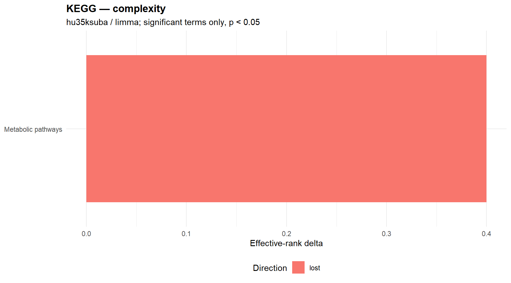
Entropy signal plot
No significant entropy terms available for plotting.
Significant complexity terms
| gene_set | semantic_block | n_shared_probes | effrank Δ | kappa Δ | direction | p_perm | status |
|---|---|---|---|---|---|---|---|
| Metabolic pathways | NA | 20 | 0.400 | -148.190 | lost | 0.030 | ok |
Significant entropy terms
No significant warehouse rows available for this section.
Terms significant in both engines
No significant warehouse rows available for this section.
Context summary
| engine | n_rows | n_gene_sets | n_significant_complexity | n_significant_entropy_spectral | median_shared_probes |
|---|---|---|---|---|---|
| complexity | 3 | 3 | 0 | 0 | 10.000 |
| entropy | 3 | 3 | 0 | 0 | 10.000 |
Complexity signal plot
No significant complexity terms available for plotting.
Entropy signal plot
No significant entropy terms available for plotting.
Significant complexity terms
No significant warehouse rows available for this section.
Significant entropy terms
No significant warehouse rows available for this section.
Terms significant in both engines
No significant warehouse rows available for this section.
Context summary
| engine | n_rows | n_gene_sets | n_significant_complexity | n_significant_entropy_spectral | median_shared_probes |
|---|---|---|---|---|---|
| complexity | 1077 | 1077 | 139 | 0 | 8.000 |
| entropy | 1077 | 1077 | 0 | 92 | 8.000 |
Complexity signal plot
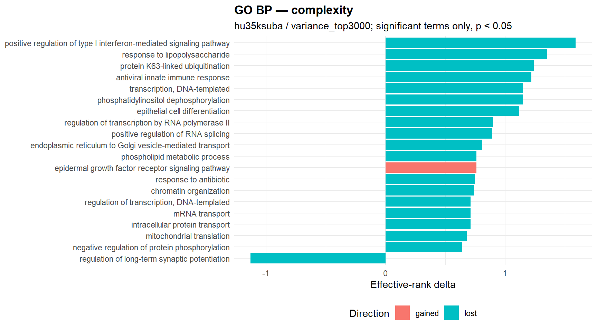
Entropy signal plot
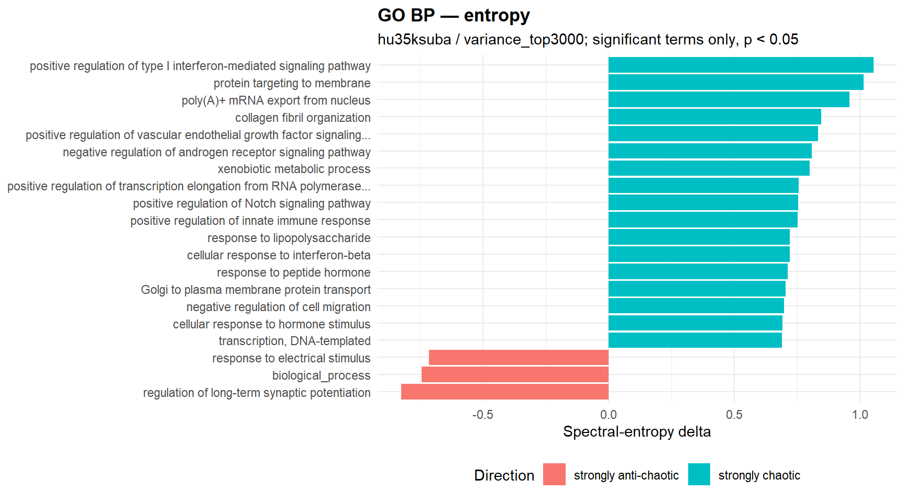
Significant complexity terms
| gene_set | semantic_block | n_shared_probes | effrank Δ | kappa Δ | direction | p_perm | status |
|---|---|---|---|---|---|---|---|
| response to lipopolysaccharide | response to lipid | 15 | 1.350 | -131.040 | lost | <0.001 | ok |
| antiviral innate immune response | innate immune response | 13 | 1.220 | -308.270 | lost | <0.001 | ok |
| transcription, DNA-templated | DNA-templated transcription | 16 | 1.150 | -178.120 | lost | <0.001 | ok |
| positive regulation of glycogen biosynthetic process | regulation of small molecule metabolic process | 5 | -0.590 | -304.160 | lost | <0.001 | ok |
| tube development | tube development | 5 | 0.560 | -306.950 | lost | <0.001 | ok |
| spermatogenesis | reproductive process | 48 | 0.540 | -80.260 | lost | <0.001 | ok |
| mRNA splice site selection | ribonucleoprotein complex biogenesis | 13 | 0.530 | -340.610 | lost | <0.001 | ok |
| heart development | heart development | 25 | 0.530 | -92.680 | lost | <0.001 | ok |
| protein insertion into ER membrane | endomembrane system organization | 5 | 0.520 | -274.870 | lost | <0.001 | ok |
| cell projection organization | cell projection organization | 25 | 0.510 | -159.770 | lost | <0.001 | ok |
| mRNA processing | mRNA metabolic process | 121 | 0.500 | -73.660 | lost | <0.001 | ok |
| positive regulation of interferon-beta production | positive regulation of cytokine production | 5 | 0.490 | -233.660 | lost | <0.001 | ok |
| autophagy | autophagy | 37 | 0.380 | -46.760 | lost | <0.001 | ok |
| lipid metabolic process | lipid metabolic process | 102 | 0.370 | -55.040 | lost | <0.001 | ok |
| innate immune response | innate immune response | 72 | 0.360 | -87.540 | lost | <0.001 | ok |
| regulation of apoptotic process | regulation of apoptotic process | 45 | 0.360 | -121.480 | lost | <0.001 | ok |
| proteasome-mediated ubiquitin-dependent protein catabolic process | protein catabolic process | 73 | 0.320 | -93.840 | lost | <0.001 | ok |
| regulation of double-strand break repair | regulation of cellular response to stress | 14 | 0.310 | -257.480 | lost | <0.001 | ok |
| in utero embryonic development | embryo development | 6 | -0.290 | -538.930 | lost | <0.001 | ok |
| intracellular signal transduction | intracellular signal transduction | 74 | 0.280 | -25.260 | lost | <0.001 | ok |
Significant entropy terms
| gene_set | semantic_block | n_shared_probes | spectral Δ | shannon Δ | spectral_direction | p_perm_spectral | p_perm_shannon | status |
|---|---|---|---|---|---|---|---|---|
| positive regulation of type I interferon-mediated signaling pathway | positive regulation of innate immune response | 5 | 1.054 | 0.004 | strongly chaotic | <0.001 | NA | ok |
| protein targeting to membrane | localization within membrane | 8 | 1.015 | 0.003 | strongly chaotic | <0.001 | NA | ok |
| poly(A)+ mRNA export from nucleus | nitrogen compound transport | 7 | 0.959 | 0.005 | strongly chaotic | <0.001 | NA | ok |
| collagen fibril organization | cellular component organization | 9 | 0.845 | 0.002 | strongly chaotic | <0.001 | NA | ok |
| regulation of long-term synaptic potentiation | modulation of chemical synaptic transmission | 5 | -0.825 | -0.003 | strongly anti-chaotic | <0.001 | NA | ok |
| positive regulation of Notch signaling pathway | positive regulation of signal transduction | 8 | 0.755 | 0.002 | strongly chaotic | <0.001 | NA | ok |
| biological_process | biological_process | 6 | -0.745 | -0.004 | strongly anti-chaotic | <0.001 | NA | ok |
| Golgi to plasma membrane protein transport | localization within membrane | 13 | 0.705 | 0.007 | strongly chaotic | <0.001 | NA | ok |
| negative regulation of epithelial to mesenchymal transition | mesenchyme development | 14 | 0.688 | 0.007 | strongly chaotic | <0.001 | NA | ok |
| protein localization to Golgi apparatus | protein localization to organelle | 8 | 0.685 | 0.005 | strongly chaotic | <0.001 | NA | ok |
| positive regulation of axonogenesis | positive regulation of cell development | 8 | 0.674 | -0.002 | strongly chaotic | <0.001 | NA | ok |
| androgen receptor signaling pathway | intracellular receptor signaling pathway | 5 | 0.670 | 0.000 | strongly chaotic | <0.001 | NA | ok |
| nucleobase-containing compound metabolic process | nucleobase-containing compound metabolic process | 9 | 0.616 | 0.004 | strongly chaotic | <0.001 | NA | ok |
| methylation | biological_process | 26 | 0.614 | 0.002 | strongly chaotic | <0.001 | NA | ok |
| positive regulation of establishment of protein localization to mitochondrion | regulation of protein localization | 8 | 0.614 | 0.004 | strongly chaotic | <0.001 | NA | ok |
| negative regulation of programmed cell death | negative regulation of programmed cell death | 5 | 0.587 | 0.006 | strongly chaotic | <0.001 | NA | ok |
| tube development | tube development | 5 | 0.582 | 0.007 | strongly chaotic | <0.001 | NA | ok |
| cell development | cell development | 11 | 0.578 | -0.002 | strongly chaotic | <0.001 | NA | ok |
| BMP signaling pathway | cellular response to growth factor stimulus | 18 | 0.562 | 0.007 | strongly chaotic | <0.001 | NA | ok |
| cellular response to interferon-gamma | cellular response to cytokine stimulus | 18 | 0.511 | 0.003 | strongly chaotic | <0.001 | NA | ok |
Terms significant in both engines
| gene_set | semantic_block | n_shared_probes | complexity_effrank Δ | complexity_direction | complexity_p_perm | entropy_spectral Δ | entropy_spectral_direction | entropy_p_perm_spectral | joint_rank_score |
|---|---|---|---|---|---|---|---|---|---|
| tube development | tube development | 5 | 0.560 | lost | <0.001 | 0.582 | strongly chaotic | <0.001 | 615.305 |
| transcription, DNA-templated | DNA-templated transcription | 16 | 1.150 | lost | <0.001 | 0.689 | strongly chaotic | 0.010 | 309.653 |
| response to lipopolysaccharide | response to lipid | 15 | 1.350 | lost | <0.001 | 0.721 | strongly chaotic | 0.010 | 309.653 |
| positive regulation of glycogen biosynthetic process | regulation of small molecule metabolic process | 5 | -0.590 | lost | <0.001 | -0.530 | strongly anti-chaotic | 0.010 | 309.653 |
| regulation of long-term synaptic potentiation | modulation of chemical synaptic transmission | 5 | -1.130 | lost | 0.010 | -0.825 | strongly anti-chaotic | <0.001 | 309.653 |
| positive regulation of type I interferon-mediated signaling pathway | positive regulation of innate immune response | 5 | 1.590 | lost | 0.030 | 1.054 | strongly chaotic | <0.001 | 309.176 |
| epithelial cell differentiation | epithelial cell differentiation | 12 | 1.120 | lost | 0.040 | 0.451 | mildly chaotic | 0.010 | 3.398 |
| response to antibiotic | response to chemical | 5 | 0.750 | lost | 0.010 | 0.602 | strongly chaotic | 0.040 | 3.398 |
| phosphatidylinositol dephosphorylation | phospholipid metabolic process | 7 | 1.150 | lost | 0.010 | 0.610 | strongly chaotic | 0.040 | 3.398 |
| protein K63-linked ubiquitination | protein modification by small protein conjugation or removal | 16 | 1.240 | lost | 0.020 | 0.611 | strongly chaotic | 0.020 | 3.398 |
| positive regulation of cold-induced thermogenesis | multicellular organismal-level homeostasis | 18 | 0.510 | lost | 0.010 | 0.360 | mildly chaotic | 0.040 | 3.398 |
| regulation of transcription by RNA polymerase II | regulation of DNA-templated transcription | 214 | 0.900 | lost | 0.020 | 0.486 | mildly chaotic | 0.030 | 3.222 |
| phospholipid metabolic process | phospholipid metabolic process | 5 | 0.760 | lost | 0.030 | 0.568 | strongly chaotic | 0.040 | 2.921 |
| positive regulation of regulatory T cell differentiation | regulation of leukocyte differentiation | 6 | -0.620 | lost | 0.030 | -0.475 | mildly anti-chaotic | 0.040 | 2.921 |
GO semantic clusters
| semantic_cluster_id | semantic_block_name | n_rows | n_terms | n_sig_complexity | n_sig_entropy_spectral | mean_shared_probes |
|---|---|---|---|---|---|---|
| BP_GO_0051254_1 | positive regulation of RNA metabolic process | 14 | 7 | 2 | 1 | 57.714 |
| BP_GO_0070647_1 | protein modification by small protein conjugation or removal | 12 | 6 | 2 | 1 | 35.833 |
| BP_GO_0080135_1 | regulation of cellular response to stress | 12 | 6 | 3 | 0 | 12.333 |
| BP_GO_0022613_3 | ribonucleoprotein complex biogenesis | 10 | 5 | 3 | 0 | 12.600 |
| BP_GO_0030163_2 | protein catabolic process | 10 | 5 | 3 | 0 | 34.000 |
| BP_GO_0006351_1 | DNA-templated transcription | 8 | 4 | 2 | 1 | 13.250 |
| BP_GO_0006355_1 | regulation of DNA-templated transcription | 6 | 3 | 2 | 1 | 143.667 |
| BP_GO_0050804_3 | modulation of chemical synaptic transmission | 6 | 3 | 2 | 1 | 7.667 |
| BP_GO_1902533_1 | positive regulation of intracellular signal transduction | 12 | 6 | 1 | 1 | 18.833 |
| BP_GO_0035556_1 | intracellular signal transduction | 10 | 5 | 2 | 0 | 22.600 |
| BP_GO_0045934_1 | negative regulation of nucleobase-containing compound metabolic process | 10 | 5 | 2 | 0 | 61.800 |
| BP_GO_0006396_1 | RNA processing | 8 | 4 | 2 | 0 | 39.000 |
| BP_GO_0006468_1 | protein phosphorylation | 8 | 4 | 2 | 0 | 18.750 |
| BP_GO_0015980_5 | energy derivation by oxidation of organic compounds | 6 | 3 | 1 | 1 | 9.333 |
| BP_GO_0045089_1 | positive regulation of innate immune response | 6 | 3 | 0 | 2 | 8.000 |
| BP_GO_0055080_1 | monoatomic cation homeostasis | 6 | 3 | 0 | 2 | 7.667 |
| BP_GO_1901698_3 | response to nitrogen compound | 6 | 3 | 0 | 2 | 5.333 |
| BP_GO_1903311_1 | regulation of mRNA metabolic process | 6 | 3 | 0 | 2 | 15.667 |
| BP_GO_0006325_2 | chromatin organization | 4 | 2 | 2 | 0 | 87.000 |
| BP_GO_0006629_3 | lipid metabolic process | 4 | 2 | 2 | 0 | 55.500 |
Context summary
| engine | n_rows | n_gene_sets | n_significant_complexity | n_significant_entropy_spectral | median_shared_probes |
|---|---|---|---|---|---|
| complexity | 390 | 390 | 63 | 0 | 10.000 |
| entropy | 390 | 390 | 0 | 34 | 10.000 |
Complexity signal plot
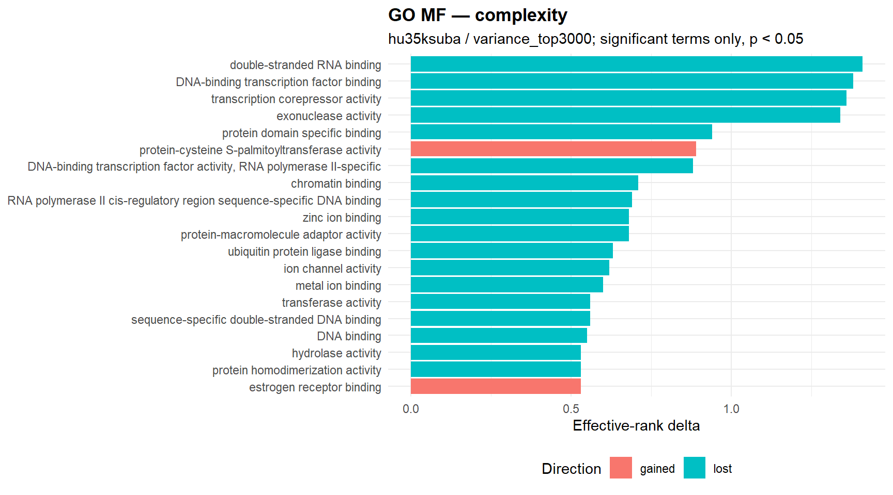
Entropy signal plot
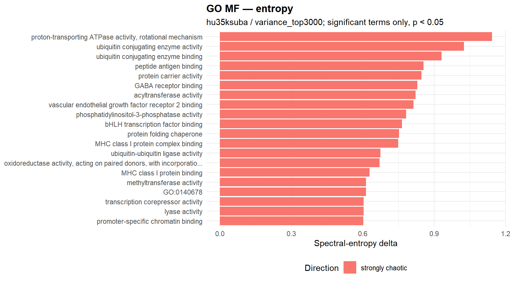
Significant complexity terms
| gene_set | semantic_block | n_shared_probes | effrank Δ | kappa Δ | direction | p_perm | status |
|---|---|---|---|---|---|---|---|
| exonuclease activity | hydrolase activity, acting on ester bonds | 11 | 1.340 | -429.660 | lost | <0.001 | ok |
| protein domain specific binding | protein binding | 39 | 0.940 | -96.710 | lost | <0.001 | ok |
| RNA polymerase II cis-regulatory region sequence-specific DNA binding | DNA binding | 143 | 0.690 | -53.210 | lost | <0.001 | ok |
| zinc ion binding | cation binding | 314 | 0.680 | -62.980 | lost | <0.001 | ok |
| metal ion binding | cation binding | 570 | 0.600 | -54.700 | lost | <0.001 | ok |
| transferase activity | transferase activity | 289 | 0.560 | -72.210 | lost | <0.001 | ok |
| protein homodimerization activity | protein binding | 102 | 0.530 | -44.750 | lost | <0.001 | ok |
| protein serine kinase activity | protein kinase activity | 56 | 0.490 | -83.230 | lost | <0.001 | ok |
| nucleic acid binding | nucleic acid binding | 128 | 0.470 | -76.880 | lost | <0.001 | ok |
| protein serine/threonine kinase activity | protein serine/threonine kinase activity | 63 | 0.470 | -76.580 | lost | <0.001 | ok |
| RNA binding | RNA binding | 355 | 0.430 | -61.880 | lost | <0.001 | ok |
| heparin binding | carbohydrate derivative binding | 22 | 0.370 | -92.290 | lost | <0.001 | ok |
| kinase activity | kinase activity | 94 | 0.350 | -62.650 | lost | <0.001 | ok |
| SH3 domain binding | protein binding | 24 | 0.340 | -53.630 | lost | <0.001 | ok |
| enzyme binding | enzyme binding | 73 | 0.300 | -34.850 | lost | <0.001 | ok |
| structural molecule activity | molecular_function | 36 | 0.230 | -65.420 | lost | <0.001 | ok |
| actin binding | cytoskeletal protein binding | 80 | 0.090 | -69.780 | lost | <0.001 | ok |
| flavin adenine dinucleotide binding | anion binding | 5 | 0.090 | -265.560 | lost | <0.001 | ok |
| tRNA binding | RNA binding | 15 | 0.070 | -76.700 | lost | <0.001 | ok |
| phosphatase binding | enzyme binding | 9 | 0.000 | -2454.790 | lost | <0.001 | ok |
Significant entropy terms
| gene_set | semantic_block | n_shared_probes | spectral Δ | shannon Δ | spectral_direction | p_perm_spectral | p_perm_shannon | status |
|---|---|---|---|---|---|---|---|---|
| ubiquitin conjugating enzyme activity | acyltransferase activity | 10 | 1.025 | 0.007 | strongly chaotic | <0.001 | NA | ok |
| ubiquitin conjugating enzyme binding | enzyme binding | 11 | 0.931 | 0.002 | strongly chaotic | <0.001 | NA | ok |
| protein carrier activity | molecular_function | 5 | 0.847 | 0.005 | strongly chaotic | <0.001 | NA | ok |
| GABA receptor binding | signaling receptor binding | 9 | 0.830 | 0.000 | strongly chaotic | <0.001 | NA | ok |
| methyltransferase activity | transferase activity | 26 | 0.614 | 0.002 | strongly chaotic | <0.001 | NA | ok |
| lyase activity | catalytic activity | 22 | 0.604 | 0.001 | strongly chaotic | <0.001 | NA | ok |
| promoter-specific chromatin binding | binding | 15 | 0.603 | -0.003 | strongly chaotic | <0.001 | NA | ok |
| protein domain specific binding | protein binding | 39 | 0.555 | 0.003 | strongly chaotic | <0.001 | NA | ok |
| U6 snRNA binding | RNA binding | 6 | 0.408 | 0.001 | mildly chaotic | <0.001 | NA | ok |
| proton-transporting ATPase activity, rotational mechanism | active transmembrane transporter activity | 5 | 1.143 | 0.003 | strongly chaotic | 0.010 | NA | ok |
| acyltransferase activity | acyltransferase activity | 19 | 0.822 | 0.000 | strongly chaotic | 0.010 | NA | ok |
| phosphatidylinositol-3-phosphatase activity | phosphoric ester hydrolase activity | 6 | 0.782 | 0.007 | strongly chaotic | 0.010 | NA | ok |
| bHLH transcription factor binding | transcription factor binding | 5 | 0.765 | 0.001 | strongly chaotic | 0.010 | NA | ok |
| protein folding chaperone | molecular_function | 15 | 0.752 | 0.002 | strongly chaotic | 0.010 | NA | ok |
| phosphatase activity | phosphoric ester hydrolase activity | 7 | 0.486 | 0.004 | mildly chaotic | 0.010 | NA | ok |
| molecular_function | molecular_function | 5 | -0.432 | -0.009 | mildly anti-chaotic | 0.010 | NA | ok |
| vascular endothelial growth factor receptor 2 binding | signaling receptor binding | 6 | 0.813 | 0.000 | strongly chaotic | 0.020 | NA | ok |
| oxidoreductase activity, acting on paired donors, with incorporation or reduction of molecular oxygen, reduced flavin or flavoprotein as one donor, and incorporation of one atom of oxygen | oxidoreductase activity | 6 | 0.671 | -0.004 | strongly chaotic | 0.020 | NA | ok |
| transcription corepressor activity | protein-macromolecule adaptor activity | 52 | 0.604 | 0.003 | strongly chaotic | 0.020 | NA | ok |
| WW domain binding | protein binding | 7 | 0.498 | 0.005 | mildly chaotic | 0.020 | NA | ok |
Terms significant in both engines
| gene_set | semantic_block | n_shared_probes | complexity_effrank Δ | complexity_direction | complexity_p_perm | entropy_spectral Δ | entropy_spectral_direction | entropy_p_perm_spectral | joint_rank_score |
|---|---|---|---|---|---|---|---|---|---|
| protein domain specific binding | protein binding | 39 | 0.940 | lost | <0.001 | 0.555 | strongly chaotic | <0.001 | 615.305 |
| transcription corepressor activity | protein-macromolecule adaptor activity | 52 | 1.360 | lost | 0.010 | 0.604 | strongly chaotic | 0.020 | 3.699 |
| DNA-binding transcription factor binding | transcription factor binding | 41 | 1.380 | lost | 0.020 | 0.593 | strongly chaotic | 0.030 | 3.222 |
| DNA-binding transcription factor activity, RNA polymerase II-specific | molecular_function | 150 | 0.880 | lost | 0.020 | 0.480 | mildly chaotic | 0.040 | 3.097 |
| ion channel binding | protein binding | 27 | 0.340 | lost | 0.030 | 0.290 | mildly chaotic | 0.040 | 2.921 |
GO semantic clusters
| semantic_cluster_id | semantic_block_name | n_rows | n_terms | n_sig_complexity | n_sig_entropy_spectral | mean_shared_probes |
|---|---|---|---|---|---|---|
| MF_GO_0003723_1 | RNA binding | 10 | 5 | 3 | 0 | 80.800 |
| MF_GO_0005515_17 | protein binding | 6 | 3 | 2 | 1 | 26.333 |
| MF_GO_0030674_1 | protein-macromolecule adaptor activity | 6 | 3 | 1 | 2 | 49.000 |
| MF_molecular_function_2 | molecular_function | 4 | 2 | 2 | 1 | 126.500 |
| MF_GO_0008092_4 | cytoskeletal protein binding | 8 | 4 | 2 | 0 | 10.500 |
| MF_GO_0019899_4 | enzyme binding | 6 | 3 | 2 | 0 | 13.333 |
| MF_GO_0043169_1 | cation binding | 6 | 3 | 1 | 1 | 228.000 |
| MF_GO_1901363_1 | heterocyclic compound binding | 6 | 3 | 2 | 0 | 103.000 |
| MF_GO_0005488_2 | binding | 4 | 2 | 1 | 1 | 55.500 |
| MF_GO_0005515_44 | protein binding | 4 | 2 | 2 | 0 | 186.000 |
| MF_GO_0016746_10 | acyltransferase activity | 4 | 2 | 1 | 1 | 41.000 |
| MF_GO_0005515_51 | protein binding | 2 | 1 | 1 | 1 | 27.000 |
| MF_GO_0008134_3 | transcription factor binding | 2 | 1 | 1 | 1 | 41.000 |
| MF_GO_0098772_3 | molecular function regulator activity | 10 | 5 | 1 | 0 | 13.600 |
| MF_GO_0003677_5 | DNA binding | 8 | 4 | 1 | 0 | 87.500 |
| MF_GO_0042578_7 | phosphoric ester hydrolase activity | 8 | 4 | 1 | 0 | 14.500 |
| MF_GO_0003677_3 | DNA binding | 6 | 3 | 1 | 0 | 39.667 |
| MF_GO_0004672_1 | protein kinase activity | 6 | 3 | 1 | 0 | 35.000 |
| MF_GO_0008134_4 | transcription factor binding | 6 | 3 | 1 | 0 | 7.000 |
| MF_GO_0016746_6 | acyltransferase activity | 6 | 3 | 1 | 0 | 25.333 |
Context summary
| engine | n_rows | n_gene_sets | n_significant_complexity | n_significant_entropy_spectral | median_shared_probes |
|---|---|---|---|---|---|
| complexity | 54 | 54 | 10 | 0 | 21.000 |
| entropy | 54 | 54 | 0 | 3 | 21.000 |
Complexity signal plot
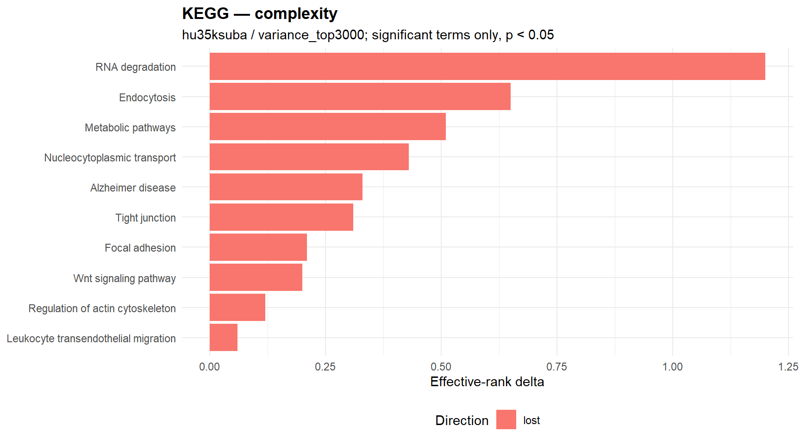
Entropy signal plot
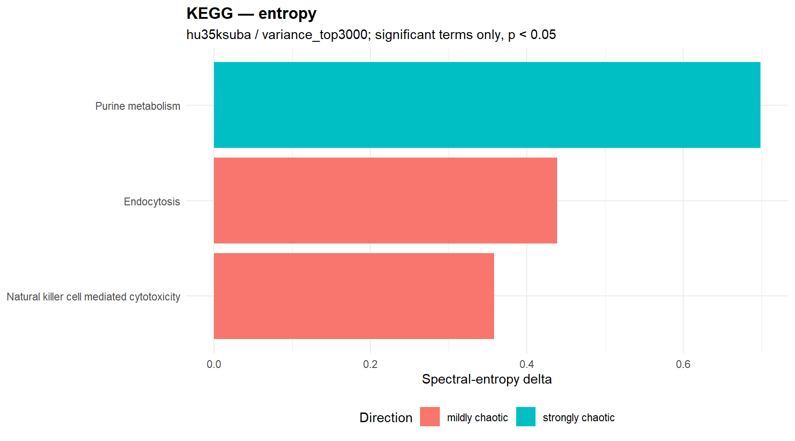
Significant complexity terms
| gene_set | semantic_block | n_shared_probes | effrank Δ | kappa Δ | direction | p_perm | status |
|---|---|---|---|---|---|---|---|
| Metabolic pathways | NA | 144 | 0.510 | -86.360 | lost | 0.010 | ok |
| Tight junction | NA | 24 | 0.310 | -98.250 | lost | 0.010 | ok |
| Leukocyte transendothelial migration | NA | 18 | 0.060 | -98.400 | lost | 0.010 | ok |
| Nucleocytoplasmic transport | NA | 43 | 0.430 | -100.640 | lost | 0.020 | ok |
| Regulation of actin cytoskeleton | NA | 37 | 0.120 | -85.420 | lost | 0.020 | ok |
| Endocytosis | NA | 46 | 0.650 | -92.610 | lost | 0.030 | ok |
| Focal adhesion | NA | 40 | 0.210 | -84.770 | lost | 0.030 | ok |
| Wnt signaling pathway | NA | 29 | 0.200 | -78.330 | lost | 0.030 | ok |
| RNA degradation | NA | 25 | 1.200 | -107.340 | lost | 0.040 | ok |
| Alzheimer disease | NA | 37 | 0.330 | -58.980 | lost | 0.040 | ok |
Significant entropy terms
| gene_set | semantic_block | n_shared_probes | spectral Δ | shannon Δ | spectral_direction | p_perm_spectral | p_perm_shannon | status |
|---|---|---|---|---|---|---|---|---|
| Purine metabolism | NA | 21 | 0.699 | 0.003 | strongly chaotic | 0.030 | NA | ok |
| Natural killer cell mediated cytotoxicity | NA | 20 | 0.358 | 0.001 | mildly chaotic | 0.030 | NA | ok |
| Endocytosis | NA | 46 | 0.439 | 0.002 | mildly chaotic | 0.040 | NA | ok |
Terms significant in both engines
| gene_set | semantic_block | n_shared_probes | complexity_effrank Δ | complexity_direction | complexity_p_perm | entropy_spectral Δ | entropy_spectral_direction | entropy_p_perm_spectral | joint_rank_score |
|---|---|---|---|---|---|---|---|---|---|
| Endocytosis | NA | 46 | 0.650 | lost | 0.030 | 0.439 | mildly chaotic | 0.040 | 2.921 |
Context summary
| engine | n_rows | n_gene_sets | n_significant_complexity | n_significant_entropy_spectral | median_shared_probes |
|---|---|---|---|---|---|
| complexity | 13 | 13 | 4 | 0 | 43.000 |
| entropy | 13 | 13 | 0 | 0 | 43.000 |
Complexity signal plot
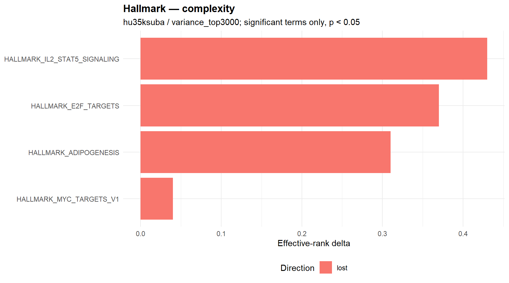
Entropy signal plot
No significant entropy terms available for plotting.
Significant complexity terms
| gene_set | semantic_block | n_shared_probes | effrank Δ | kappa Δ | direction | p_perm | status |
|---|---|---|---|---|---|---|---|
| HALLMARK_IL2_STAT5_SIGNALING | NA | 45 | 0.430 | -58.150 | lost | 0.010 | ok |
| HALLMARK_E2F_TARGETS | NA | 34 | 0.370 | -93.350 | lost | 0.010 | ok |
| HALLMARK_MYC_TARGETS_V1 | NA | 39 | 0.040 | -55.980 | lost | 0.030 | ok |
| HALLMARK_ADIPOGENESIS | NA | 37 | 0.310 | -36.100 | lost | 0.040 | ok |
Significant entropy terms
No significant warehouse rows available for this section.
Terms significant in both engines
No significant warehouse rows available for this section.
Context summary
| engine | n_rows | n_gene_sets | n_significant_complexity | n_significant_entropy_spectral | median_shared_probes |
|---|---|---|---|---|---|
| complexity | 789 | 789 | 38 | 0 | 8.000 |
| entropy | 789 | 789 | 0 | 241 | 8.000 |
Complexity signal plot
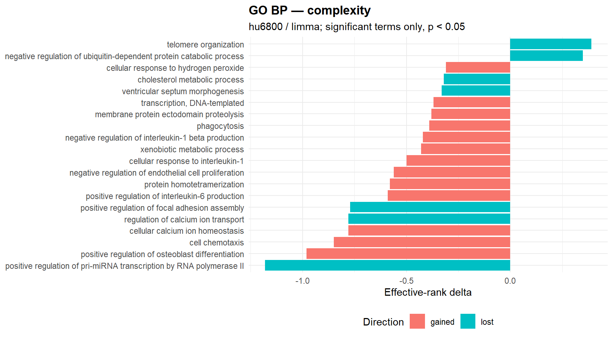
Entropy signal plot
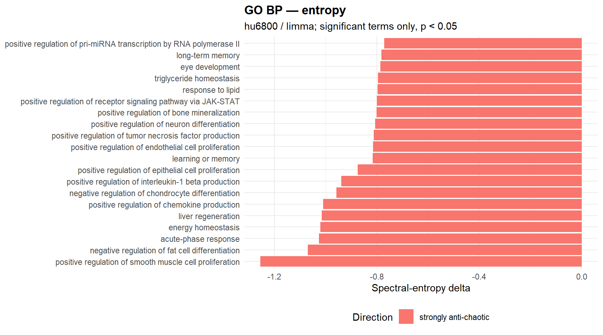
Significant complexity terms
| gene_set | semantic_block | n_shared_probes | effrank Δ | kappa Δ | direction | p_perm | status |
|---|---|---|---|---|---|---|---|
| positive regulation of pri-miRNA transcription by RNA polymerase II | positive regulation of RNA metabolic process | 13 | -1.180 | -384.310 | lost | <0.001 | ok |
| protein homotetramerization | protein-containing complex assembly | 7 | -0.580 | 2291.660 | gained | <0.001 | ok |
| xenobiotic metabolic process | cellular response to chemical stimulus | 12 | -0.430 | 816.980 | gained | <0.001 | ok |
| phagocytosis | endocytosis | 13 | -0.390 | 406.520 | gained | <0.001 | ok |
| negative regulation of ubiquitin-dependent protein catabolic process | negative regulation of protein metabolic process | 7 | 0.350 | -8071.770 | lost | <0.001 | ok |
| fibrinolysis | negative regulation of response to external stimulus | 6 | -0.310 | 1564.450 | gained | <0.001 | ok |
| amino acid transport | transport | 7 | 0.090 | -3161.020 | lost | <0.001 | ok |
| myelination | nervous system development | 5 | 0.050 | -431.510 | lost | <0.001 | ok |
| cell chemotaxis | chemotaxis | 15 | -0.850 | 328.600 | gained | 0.010 | ok |
| visual perception | nervous system process | 25 | -0.310 | -78.390 | lost | 0.010 | ok |
| cellular response to cadmium ion | cellular response to chemical stimulus | 6 | -0.290 | 603.530 | gained | 0.010 | ok |
| negative regulation of interleukin-1 beta production | negative regulation of multicellular organismal process | 7 | -0.420 | 3502.020 | gained | 0.020 | ok |
| telomere organization | chromosome organization | 8 | 0.390 | -18100.550 | lost | 0.020 | ok |
| membrane protein ectodomain proteolysis | proteolysis | 5 | -0.380 | 424.440 | gained | 0.020 | ok |
| regulation of circadian rhythm | biological_process | 11 | -0.270 | -978.140 | lost | 0.020 | ok |
| response to glucose | response to oxygen-containing compound | 14 | -0.240 | 233.350 | gained | 0.020 | ok |
| positive regulation of glycogen biosynthetic process | regulation of small molecule metabolic process | 5 | -0.210 | 183.350 | gained | 0.020 | ok |
| chloride transport | monoatomic ion transport | 10 | -0.090 | 1861.640 | gained | 0.020 | ok |
| T cell activation | T cell activation | 11 | -0.030 | 455.290 | gained | 0.020 | ok |
| positive regulation of transforming growth factor beta receptor signaling pathway | cellular response to growth factor stimulus | 6 | 0.010 | 762.370 | gained | 0.020 | ok |
Significant entropy terms
| gene_set | semantic_block | n_shared_probes | spectral Δ | shannon Δ | spectral_direction | p_perm_spectral | p_perm_shannon | status |
|---|---|---|---|---|---|---|---|---|
| positive regulation of smooth muscle cell proliferation | positive regulation of cell population proliferation | 7 | -1.254 | 0.001 | strongly anti-chaotic | <0.001 | NA | ok |
| energy homeostasis | multicellular organismal-level homeostasis | 5 | -1.020 | -0.001 | strongly anti-chaotic | <0.001 | NA | ok |
| liver regeneration | animal organ development | 9 | -1.015 | -0.004 | strongly anti-chaotic | <0.001 | NA | ok |
| positive regulation of interleukin-1 beta production | positive regulation of cytokine production | 14 | -0.939 | 0.001 | strongly anti-chaotic | <0.001 | NA | ok |
| positive regulation of epithelial cell proliferation | positive regulation of cell population proliferation | 12 | -0.874 | 0.000 | strongly anti-chaotic | <0.001 | NA | ok |
| positive regulation of tumor necrosis factor production | positive regulation of cytokine production | 23 | -0.812 | -0.002 | strongly anti-chaotic | <0.001 | NA | ok |
| positive regulation of neuron differentiation | positive regulation of cell differentiation | 9 | -0.806 | -0.004 | strongly anti-chaotic | <0.001 | NA | ok |
| positive regulation of bone mineralization | positive regulation of developmental process | 8 | -0.801 | -0.003 | strongly anti-chaotic | <0.001 | NA | ok |
| positive regulation of receptor signaling pathway via JAK-STAT | positive regulation of signal transduction | 9 | -0.799 | -0.005 | strongly anti-chaotic | <0.001 | NA | ok |
| response to lipid | response to lipid | 5 | -0.797 | -0.003 | strongly anti-chaotic | <0.001 | NA | ok |
| nucleobase-containing compound metabolic process | nucleobase-containing compound metabolic process | 6 | -0.760 | 0.001 | strongly anti-chaotic | <0.001 | NA | ok |
| positive regulation of vascular endothelial growth factor production | positive regulation of cytokine production | 7 | -0.728 | 0.004 | strongly anti-chaotic | <0.001 | NA | ok |
| positive regulation of osteoblast differentiation | positive regulation of cell differentiation | 10 | -0.721 | 0.011 | strongly anti-chaotic | <0.001 | NA | ok |
| heart looping | heart morphogenesis | 6 | -0.719 | -0.002 | strongly anti-chaotic | <0.001 | NA | ok |
| negative regulation of nitric oxide biosynthetic process | negative regulation of biosynthetic process | 6 | -0.689 | 0.001 | strongly anti-chaotic | <0.001 | NA | ok |
| negative regulation of pri-miRNA transcription by RNA polymerase II | negative regulation of nucleobase-containing compound metabolic process | 11 | -0.679 | -0.001 | strongly anti-chaotic | <0.001 | NA | ok |
| cellular response to amyloid-beta | cellular response to nitrogen compound | 9 | -0.676 | -0.012 | strongly anti-chaotic | <0.001 | NA | ok |
| regulation of protein secretion | regulation of secretion by cell | 5 | -0.673 | 0.011 | strongly anti-chaotic | <0.001 | NA | ok |
| positive regulation of filopodium assembly | regulation of plasma membrane bounded cell projection organization | 6 | -0.671 | -0.004 | strongly anti-chaotic | <0.001 | NA | ok |
| response to lead ion | response to chemical | 5 | -0.669 | -0.007 | strongly anti-chaotic | <0.001 | NA | ok |
Terms significant in both engines
| gene_set | semantic_block | n_shared_probes | complexity_effrank Δ | complexity_direction | complexity_p_perm | entropy_spectral Δ | entropy_spectral_direction | entropy_p_perm_spectral | joint_rank_score |
|---|---|---|---|---|---|---|---|---|---|
| protein homotetramerization | protein-containing complex assembly | 7 | -0.580 | gained | <0.001 | -0.526 | strongly anti-chaotic | <0.001 | 615.305 |
| fibrinolysis | negative regulation of response to external stimulus | 6 | -0.310 | gained | <0.001 | -0.292 | mildly anti-chaotic | 0.020 | 309.352 |
| positive regulation of pri-miRNA transcription by RNA polymerase II | positive regulation of RNA metabolic process | 13 | -1.180 | lost | <0.001 | -0.771 | strongly anti-chaotic | 0.020 | 309.352 |
| negative regulation of endothelial cell proliferation | regulation of cell population proliferation | 5 | -0.560 | gained | 0.030 | -0.540 | strongly anti-chaotic | <0.001 | 309.176 |
| transcription, DNA-templated | DNA-templated transcription | 14 | -0.370 | gained | 0.030 | -0.316 | mildly anti-chaotic | <0.001 | 309.176 |
| cholesterol metabolic process | alcohol metabolic process | 14 | -0.320 | lost | 0.030 | -0.276 | mildly anti-chaotic | <0.001 | 309.176 |
| positive regulation of osteoblast differentiation | positive regulation of cell differentiation | 10 | -0.980 | gained | 0.030 | -0.721 | strongly anti-chaotic | <0.001 | 309.176 |
| positive regulation of focal adhesion assembly | positive regulation of cell adhesion | 5 | -0.770 | lost | 0.040 | -0.643 | strongly anti-chaotic | <0.001 | 309.051 |
| cellular response to interleukin-1 | cellular response to cytokine stimulus | 13 | -0.500 | gained | 0.040 | -0.516 | strongly anti-chaotic | <0.001 | 309.051 |
| cell chemotaxis | chemotaxis | 15 | -0.850 | gained | 0.010 | -0.759 | strongly anti-chaotic | 0.010 | 4.000 |
| membrane protein ectodomain proteolysis | proteolysis | 5 | -0.380 | gained | 0.020 | -0.335 | mildly anti-chaotic | 0.030 | 3.222 |
| cellular calcium ion homeostasis | monoatomic cation homeostasis | 13 | -0.780 | gained | 0.040 | -0.705 | strongly anti-chaotic | 0.020 | 3.097 |
| ventricular septum morphogenesis | heart morphogenesis | 5 | -0.330 | lost | 0.040 | -0.376 | mildly anti-chaotic | 0.040 | 2.796 |
GO semantic clusters
| semantic_cluster_id | semantic_block_name | n_rows | n_terms | n_sig_complexity | n_sig_entropy_spectral | mean_shared_probes |
|---|---|---|---|---|---|---|
| BP_GO_0001819_1 | positive regulation of cytokine production | 16 | 8 | 1 | 4 | 9.625 |
| BP_GO_0007186_2 | G protein-coupled receptor signaling pathway | 14 | 7 | 0 | 5 | 24.286 |
| BP_GO_0051254_1 | positive regulation of RNA metabolic process | 8 | 4 | 1 | 4 | 68.250 |
| BP_GO_0045934_1 | negative regulation of nucleobase-containing compound metabolic process | 8 | 4 | 0 | 4 | 53.250 |
| BP_GO_0035556_1 | intracellular signal transduction | 8 | 4 | 0 | 3 | 17.750 |
| BP_GO_0065003_7 | protein-containing complex assembly | 6 | 3 | 1 | 2 | 6.333 |
| BP_GO_0003007_4 | heart morphogenesis | 4 | 2 | 1 | 2 | 5.500 |
| BP_GO_0045597_1 | positive regulation of cell differentiation | 4 | 2 | 1 | 2 | 15.500 |
| BP_GO_0050804_1 | modulation of chemical synaptic transmission | 8 | 4 | 0 | 2 | 8.000 |
| BP_GO_0051241_1 | negative regulation of multicellular organismal process | 8 | 4 | 0 | 2 | 6.000 |
| BP_GO_0006468_1 | protein phosphorylation | 6 | 3 | 0 | 2 | 17.333 |
| BP_GO_0007167_1 | enzyme-linked receptor protein signaling pathway | 6 | 3 | 0 | 2 | 6.000 |
| BP_GO_0007610_2 | behavior | 6 | 3 | 0 | 2 | 9.000 |
| BP_GO_0033993_3 | response to lipid | 6 | 3 | 0 | 2 | 6.333 |
| BP_GO_0055080_1 | monoatomic cation homeostasis | 6 | 3 | 1 | 1 | 9.000 |
| BP_GO_0006351_1 | DNA-templated transcription | 4 | 2 | 1 | 1 | 15.000 |
| BP_GO_0006508_1 | proteolysis | 4 | 2 | 1 | 1 | 24.000 |
| BP_GO_0006629_3 | lipid metabolic process | 4 | 2 | 0 | 2 | 47.000 |
| BP_GO_0006897_2 | endocytosis | 4 | 2 | 0 | 2 | 11.000 |
| BP_GO_0007423_1 | sensory organ development | 4 | 2 | 0 | 2 | 6.000 |
Context summary
| engine | n_rows | n_gene_sets | n_significant_complexity | n_significant_entropy_spectral | median_shared_probes |
|---|---|---|---|---|---|
| complexity | 305 | 305 | 16 | 0 | 9.000 |
| entropy | 305 | 305 | 0 | 72 | 9.000 |
Complexity signal plot
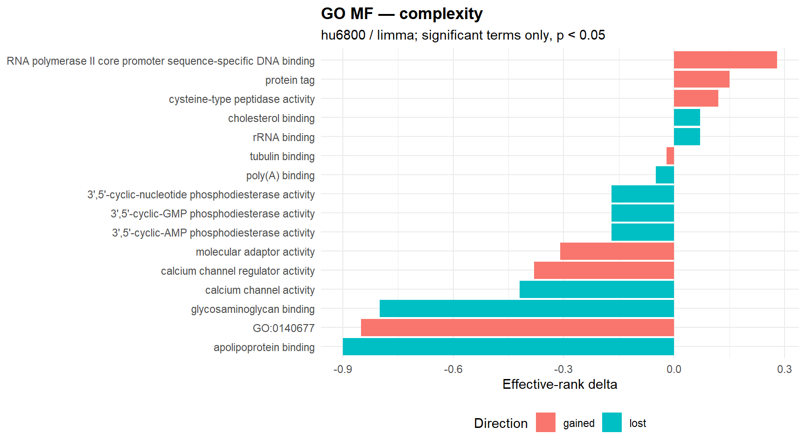
Entropy signal plot
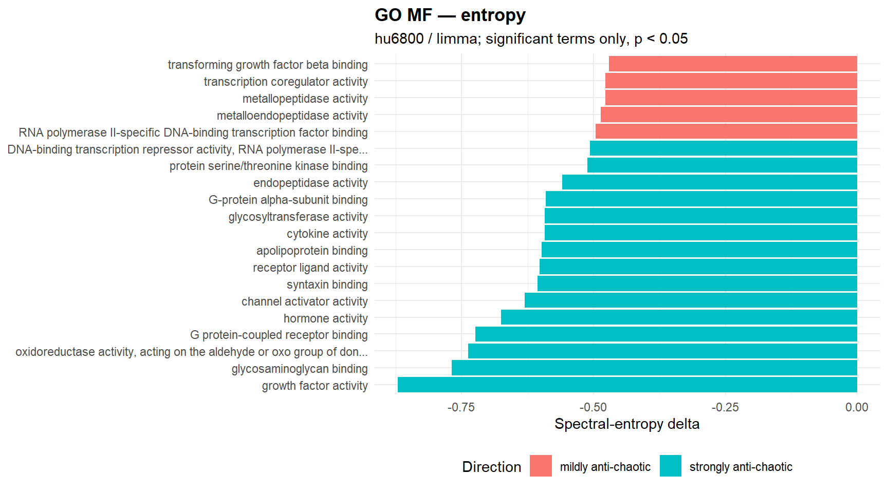
Significant complexity terms
| gene_set | semantic_block | n_shared_probes | effrank Δ | kappa Δ | direction | p_perm | status |
|---|---|---|---|---|---|---|---|
| molecular adaptor activity | molecular adaptor activity | 25 | -0.310 | 134.780 | gained | <0.001 | ok |
| cysteine-type peptidase activity | peptidase activity | 9 | 0.120 | 27605.310 | gained | <0.001 | ok |
| calcium channel activity | monoatomic cation channel activity | 8 | -0.420 | -82136.860 | lost | 0.010 | ok |
| calcium channel regulator activity | molecular function regulator activity | 5 | -0.380 | 319.550 | gained | 0.010 | ok |
| glycosaminoglycan binding | carbohydrate derivative binding | 5 | -0.800 | -440.590 | lost | 0.020 | ok |
| RNA polymerase II core promoter sequence-specific DNA binding | DNA binding | 6 | 0.280 | 415.400 | gained | 0.020 | ok |
| rRNA binding | RNA binding | 9 | 0.070 | -3019.060 | lost | 0.020 | ok |
| poly(A) binding | RNA binding | 7 | -0.050 | -1829.650 | lost | 0.020 | ok |
| GO:0140677 | molecular function regulator activity | 7 | -0.850 | 2666.470 | gained | 0.030 | ok |
| protein tag | molecular_function | 5 | 0.150 | 190.910 | gained | 0.030 | ok |
| tubulin binding | cytoskeletal protein binding | 9 | -0.020 | 1871.930 | gained | 0.030 | ok |
| apolipoprotein binding | protein binding | 5 | -0.900 | -142.130 | lost | 0.040 | ok |
| 3’,5’-cyclic-nucleotide phosphodiesterase activity | phosphoric ester hydrolase activity | 5 | -0.170 | -401.900 | lost | 0.040 | ok |
| 3’,5’-cyclic-AMP phosphodiesterase activity | phosphoric ester hydrolase activity | 5 | -0.170 | -401.900 | lost | 0.040 | ok |
| 3’,5’-cyclic-GMP phosphodiesterase activity | phosphoric ester hydrolase activity | 5 | -0.170 | -401.900 | lost | 0.040 | ok |
| cholesterol binding | lipid binding | 9 | 0.070 | -1192.110 | lost | 0.040 | ok |
Significant entropy terms
| gene_set | semantic_block | n_shared_probes | spectral Δ | shannon Δ | spectral_direction | p_perm_spectral | p_perm_shannon | status |
|---|---|---|---|---|---|---|---|---|
| growth factor activity | molecular function regulator activity | 26 | -0.871 | -0.001 | strongly anti-chaotic | <0.001 | NA | ok |
| hormone activity | molecular function regulator activity | 22 | -0.675 | -0.002 | strongly anti-chaotic | <0.001 | NA | ok |
| channel activator activity | molecular function regulator activity | 5 | -0.630 | 0.002 | strongly anti-chaotic | <0.001 | NA | ok |
| receptor ligand activity | molecular function regulator activity | 21 | -0.602 | 0.000 | strongly anti-chaotic | <0.001 | NA | ok |
| apolipoprotein binding | protein binding | 5 | -0.598 | -0.001 | strongly anti-chaotic | <0.001 | NA | ok |
| glycosyltransferase activity | transferase activity | 8 | -0.592 | -0.004 | strongly anti-chaotic | <0.001 | NA | ok |
| DNA-binding transcription repressor activity, RNA polymerase II-specific | molecular_function | 28 | -0.507 | -0.002 | strongly anti-chaotic | <0.001 | NA | ok |
| RNA polymerase II-specific DNA-binding transcription factor binding | transcription factor binding | 30 | -0.496 | 0.000 | mildly anti-chaotic | <0.001 | NA | ok |
| protein serine/threonine/tyrosine kinase activity | protein kinase activity | 9 | -0.463 | -0.002 | mildly anti-chaotic | <0.001 | NA | ok |
| signaling receptor binding | signaling receptor binding | 56 | -0.451 | -0.001 | mildly anti-chaotic | <0.001 | NA | ok |
| protein kinase activity | protein kinase activity | 53 | -0.443 | 0.000 | mildly anti-chaotic | <0.001 | NA | ok |
| protein dimerization activity | protein binding | 19 | -0.438 | -0.005 | mildly anti-chaotic | <0.001 | NA | ok |
| kinase activity | kinase activity | 65 | -0.391 | -0.001 | mildly anti-chaotic | <0.001 | NA | ok |
| nuclease activity | catalytic activity | 7 | -0.379 | -0.004 | mildly anti-chaotic | <0.001 | NA | ok |
| transferase activity | transferase activity | 133 | -0.377 | 0.000 | mildly anti-chaotic | <0.001 | NA | ok |
| chromatin binding | binding | 75 | -0.364 | 0.000 | mildly anti-chaotic | <0.001 | NA | ok |
| calcium channel activity | monoatomic cation channel activity | 8 | -0.355 | 0.000 | mildly anti-chaotic | <0.001 | NA | ok |
| oxidoreductase activity | oxidoreductase activity | 68 | -0.354 | 0.001 | mildly anti-chaotic | <0.001 | NA | ok |
| growth factor binding | protein binding | 12 | -0.319 | 0.002 | mildly anti-chaotic | <0.001 | NA | ok |
| transcription corepressor binding | transcription factor binding | 13 | -0.280 | 0.002 | mildly anti-chaotic | <0.001 | NA | ok |
Terms significant in both engines
| gene_set | semantic_block | n_shared_probes | complexity_effrank Δ | complexity_direction | complexity_p_perm | entropy_spectral Δ | entropy_spectral_direction | entropy_p_perm_spectral | joint_rank_score |
|---|---|---|---|---|---|---|---|---|---|
| calcium channel activity | monoatomic cation channel activity | 8 | -0.420 | lost | 0.010 | -0.355 | mildly anti-chaotic | <0.001 | 309.653 |
| apolipoprotein binding | protein binding | 5 | -0.900 | lost | 0.040 | -0.598 | strongly anti-chaotic | <0.001 | 309.051 |
| glycosaminoglycan binding | carbohydrate derivative binding | 5 | -0.800 | lost | 0.020 | -0.769 | strongly anti-chaotic | 0.010 | 3.699 |
GO semantic clusters
| semantic_cluster_id | semantic_block_name | n_rows | n_terms | n_sig_complexity | n_sig_entropy_spectral | mean_shared_probes |
|---|---|---|---|---|---|---|
| MF_GO_0098772_3 | molecular function regulator activity | 12 | 6 | 0 | 4 | 19.667 |
| MF_GO_0004672_1 | protein kinase activity | 8 | 4 | 0 | 4 | 24.500 |
| MF_GO_0003677_3 | DNA binding | 8 | 4 | 1 | 2 | 25.000 |
| MF_GO_0042578_1 | phosphoric ester hydrolase activity | 6 | 3 | 3 | 0 | 5.000 |
| MF_GO_0043169_1 | cation binding | 6 | 3 | 0 | 3 | 124.333 |
| MF_GO_0008233_1 | peptidase activity | 8 | 4 | 1 | 1 | 14.500 |
| MF_GO_0004888_8 | transmembrane signaling receptor activity | 4 | 2 | 0 | 2 | 5.000 |
| MF_GO_0005261_1 | monoatomic cation channel activity | 4 | 2 | 1 | 1 | 7.000 |
| MF_GO_0008233_6 | peptidase activity | 4 | 2 | 0 | 2 | 11.000 |
| MF_GO_0005515_36 | protein binding | 2 | 1 | 1 | 1 | 5.000 |
| MF_GO_0097367_3 | carbohydrate derivative binding | 2 | 1 | 1 | 1 | 5.000 |
| MF_GO_0019899_3 | enzyme binding | 8 | 4 | 0 | 1 | 23.500 |
| MF_GO_0008134_2 | transcription factor binding | 6 | 3 | 0 | 1 | 10.333 |
| MF_GO_0019899_4 | enzyme binding | 6 | 3 | 0 | 1 | 9.333 |
| MF_GO_0030674_1 | protein-macromolecule adaptor activity | 6 | 3 | 0 | 1 | 26.667 |
| MF_GO_0003723_3 | RNA binding | 4 | 2 | 1 | 0 | 7.500 |
| MF_GO_0003824_6 | catalytic activity | 4 | 2 | 0 | 1 | 27.000 |
| MF_GO_0005488_1 | binding | 4 | 2 | 0 | 1 | 8.500 |
| MF_GO_0005488_2 | binding | 4 | 2 | 0 | 1 | 47.000 |
| MF_GO_0005515_18 | protein binding | 4 | 2 | 0 | 1 | 8.500 |
Context summary
| engine | n_rows | n_gene_sets | n_significant_complexity | n_significant_entropy_spectral | median_shared_probes |
|---|---|---|---|---|---|
| complexity | 57 | 57 | 3 | 0 | 23.000 |
| entropy | 57 | 57 | 0 | 25 | 23.000 |
Complexity signal plot
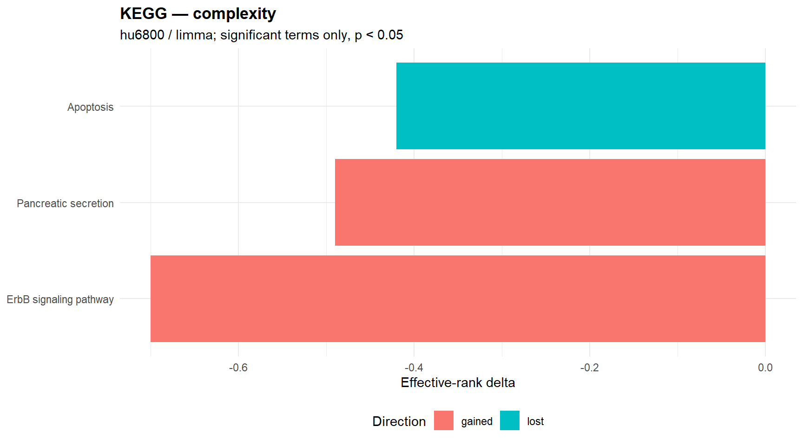
Entropy signal plot
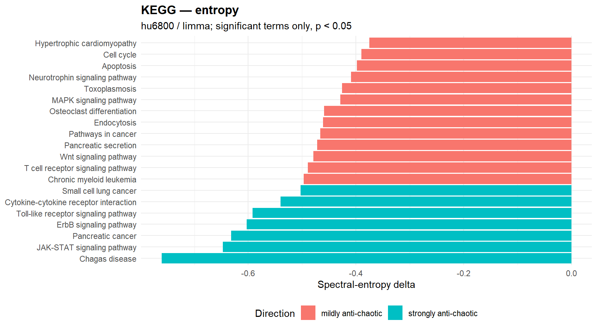
Significant complexity terms
| gene_set | semantic_block | n_shared_probes | effrank Δ | kappa Δ | direction | p_perm | status |
|---|---|---|---|---|---|---|---|
| Apoptosis | NA | 14 | -0.420 | -371.720 | lost | 0.010 | ok |
| ErbB signaling pathway | NA | 19 | -0.700 | 209.410 | gained | 0.030 | ok |
| Pancreatic secretion | NA | 13 | -0.490 | 327.730 | gained | 0.040 | ok |
Significant entropy terms
| gene_set | semantic_block | n_shared_probes | spectral Δ | shannon Δ | spectral_direction | p_perm_spectral | p_perm_shannon | status |
|---|---|---|---|---|---|---|---|---|
| Chronic myeloid leukemia | NA | 21 | -0.497 | 0.002 | mildly anti-chaotic | <0.001 | NA | ok |
| Wnt signaling pathway | NA | 24 | -0.479 | -0.003 | mildly anti-chaotic | <0.001 | NA | ok |
| Pancreatic secretion | NA | 13 | -0.472 | -0.004 | mildly anti-chaotic | <0.001 | NA | ok |
| Pathways in cancer | NA | 68 | -0.466 | 0.001 | mildly anti-chaotic | <0.001 | NA | ok |
| Endocytosis | NA | 23 | -0.461 | 0.001 | mildly anti-chaotic | <0.001 | NA | ok |
| MAPK signaling pathway | NA | 45 | -0.429 | 0.000 | mildly anti-chaotic | <0.001 | NA | ok |
| Toxoplasmosis | NA | 29 | -0.426 | 0.000 | mildly anti-chaotic | <0.001 | NA | ok |
| Metabolic pathways | NA | 125 | -0.271 | 0.002 | mildly anti-chaotic | <0.001 | NA | ok |
| Chagas disease | NA | 20 | -0.761 | 0.000 | strongly anti-chaotic | 0.010 | NA | ok |
| JAK-STAT signaling pathway | NA | 31 | -0.647 | 0.001 | strongly anti-chaotic | 0.010 | NA | ok |
| Pancreatic cancer | NA | 13 | -0.632 | 0.002 | strongly anti-chaotic | 0.010 | NA | ok |
| Cytokine-cytokine receptor interaction | NA | 54 | -0.540 | 0.001 | strongly anti-chaotic | 0.010 | NA | ok |
| Cell cycle | NA | 23 | -0.390 | 0.000 | mildly anti-chaotic | 0.010 | NA | ok |
| Leukocyte transendothelial migration | NA | 25 | -0.357 | -0.001 | mildly anti-chaotic | 0.010 | NA | ok |
| Neurotrophin signaling pathway | NA | 24 | -0.409 | -0.005 | mildly anti-chaotic | 0.020 | NA | ok |
| Lysosome biogenesis | NA | 15 | -0.271 | 0.000 | mildly anti-chaotic | 0.020 | NA | ok |
| ErbB signaling pathway | NA | 19 | -0.603 | -0.004 | strongly anti-chaotic | 0.030 | NA | ok |
| Toll-like receptor signaling pathway | NA | 22 | -0.592 | 0.004 | strongly anti-chaotic | 0.030 | NA | ok |
| Small cell lung cancer | NA | 17 | -0.503 | -0.003 | strongly anti-chaotic | 0.030 | NA | ok |
| T cell receptor signaling pathway | NA | 19 | -0.489 | -0.001 | mildly anti-chaotic | 0.030 | NA | ok |
Terms significant in both engines
| gene_set | semantic_block | n_shared_probes | complexity_effrank Δ | complexity_direction | complexity_p_perm | entropy_spectral Δ | entropy_spectral_direction | entropy_p_perm_spectral | joint_rank_score |
|---|---|---|---|---|---|---|---|---|---|
| Pancreatic secretion | NA | 13 | -0.490 | gained | 0.040 | -0.472 | mildly anti-chaotic | <0.001 | 309.051 |
| Apoptosis | NA | 14 | -0.420 | lost | 0.010 | -0.398 | mildly anti-chaotic | 0.030 | 3.523 |
| ErbB signaling pathway | NA | 19 | -0.700 | gained | 0.030 | -0.603 | strongly anti-chaotic | 0.030 | 3.046 |
Context summary
| engine | n_rows | n_gene_sets | n_significant_complexity | n_significant_entropy_spectral | median_shared_probes |
|---|---|---|---|---|---|
| complexity | 13 | 13 | 1 | 0 | 37.000 |
| entropy | 13 | 13 | 0 | 8 | 37.000 |
Complexity signal plot
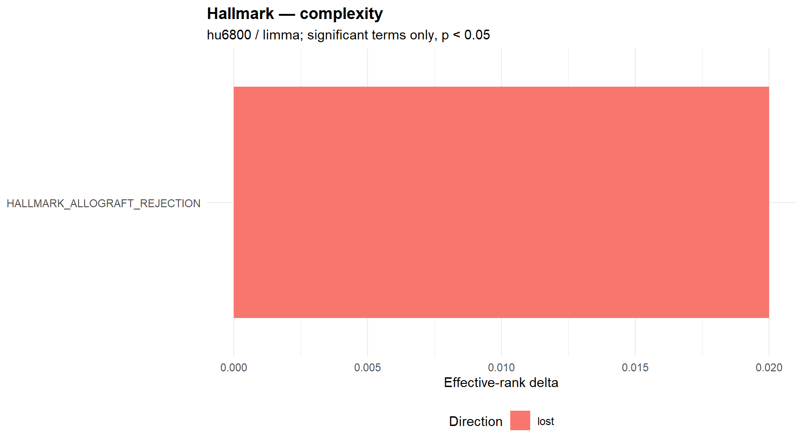
Entropy signal plot
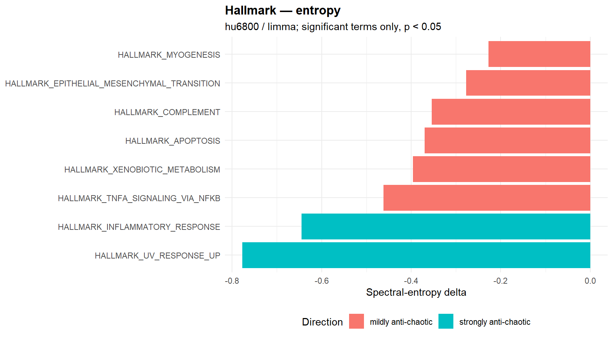
Significant complexity terms
| gene_set | semantic_block | n_shared_probes | effrank Δ | kappa Δ | direction | p_perm | status |
|---|---|---|---|---|---|---|---|
| HALLMARK_ALLOGRAFT_REJECTION | NA | 40 | 0.020 | -79.000 | lost | <0.001 | ok |
Significant entropy terms
| gene_set | semantic_block | n_shared_probes | spectral Δ | shannon Δ | spectral_direction | p_perm_spectral | p_perm_shannon | status |
|---|---|---|---|---|---|---|---|---|
| HALLMARK_TNFA_SIGNALING_VIA_NFKB | NA | 50 | -0.462 | 0.002 | mildly anti-chaotic | <0.001 | NA | ok |
| HALLMARK_XENOBIOTIC_METABOLISM | NA | 39 | -0.396 | -0.002 | mildly anti-chaotic | <0.001 | NA | ok |
| HALLMARK_APOPTOSIS | NA | 36 | -0.370 | 0.001 | mildly anti-chaotic | <0.001 | NA | ok |
| HALLMARK_COMPLEMENT | NA | 33 | -0.354 | 0.003 | mildly anti-chaotic | <0.001 | NA | ok |
| HALLMARK_INFLAMMATORY_RESPONSE | NA | 36 | -0.645 | -0.003 | strongly anti-chaotic | 0.010 | NA | ok |
| HALLMARK_MYOGENESIS | NA | 52 | -0.227 | 0.004 | mildly anti-chaotic | 0.010 | NA | ok |
| HALLMARK_EPITHELIAL_MESENCHYMAL_TRANSITION | NA | 61 | -0.277 | 0.002 | mildly anti-chaotic | 0.020 | NA | ok |
| HALLMARK_UV_RESPONSE_UP | NA | 19 | -0.777 | -0.004 | strongly anti-chaotic | 0.030 | NA | ok |
Terms significant in both engines
No significant warehouse rows available for this section.
Context summary
| engine | n_rows | n_gene_sets | n_significant_complexity | n_significant_entropy_spectral | median_shared_probes |
|---|---|---|---|---|---|
| complexity | 1498 | 1498 | 70 | 0 | 9.000 |
| entropy | 1498 | 1498 | 0 | 123 | 9.000 |
Complexity signal plot
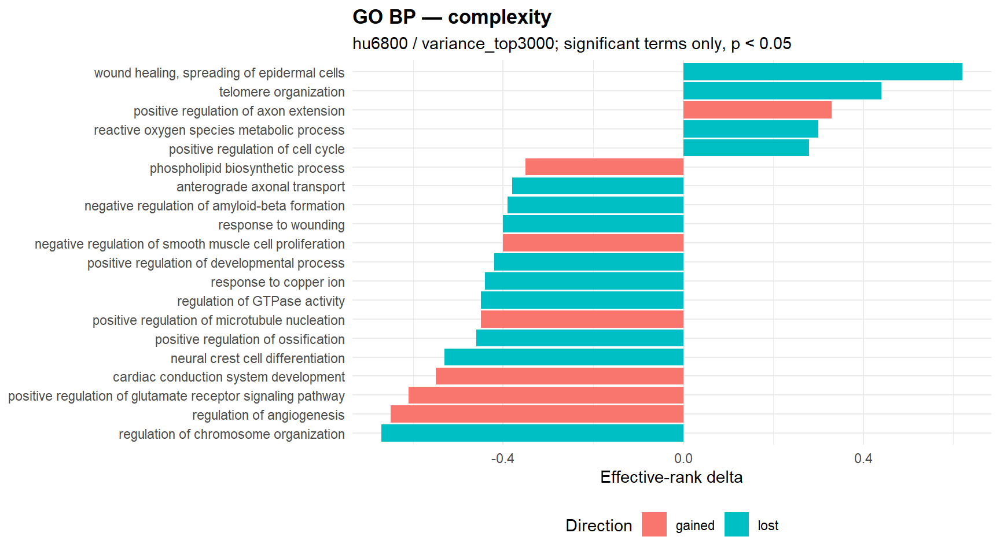
Entropy signal plot
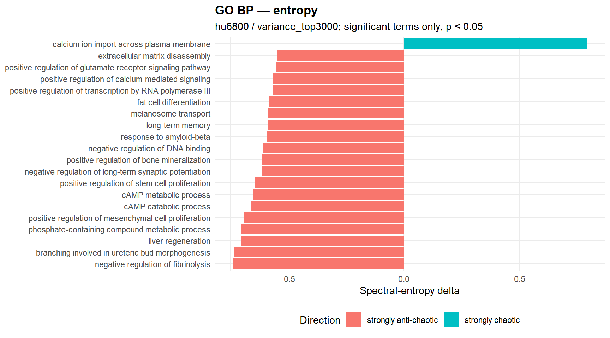
Significant complexity terms
| gene_set | semantic_block | n_shared_probes | effrank Δ | kappa Δ | direction | p_perm | status |
|---|---|---|---|---|---|---|---|
| regulation of angiogenesis | regulation of anatomical structure morphogenesis | 13 | -0.650 | 544.760 | gained | <0.001 | ok |
| regulation of GTPase activity | regulation of catalytic activity | 5 | -0.450 | -398.530 | lost | <0.001 | ok |
| response to copper ion | response to chemical | 5 | -0.440 | -528.140 | lost | <0.001 | ok |
| response to wounding | response to wounding | 23 | -0.400 | -95.480 | lost | <0.001 | ok |
| negative regulation of amyloid-beta formation | negative regulation of protein metabolic process | 6 | -0.390 | -2293.380 | lost | <0.001 | ok |
| RNA polymerase II preinitiation complex assembly | protein-containing complex assembly | 5 | 0.270 | 398.520 | gained | <0.001 | ok |
| membrane protein ectodomain proteolysis | proteolysis | 8 | -0.240 | 409386.540 | gained | <0.001 | ok |
| negative regulation of cell adhesion | regulation of cell adhesion | 15 | -0.240 | 187.250 | gained | <0.001 | ok |
| CD8-positive, alpha-beta T cell differentiation | lymphocyte differentiation | 12 | -0.200 | 554.790 | gained | <0.001 | ok |
| establishment or maintenance of cell polarity | biological_process | 14 | 0.150 | -363.180 | lost | <0.001 | ok |
| spliceosome conformational change to release U4 (or U4atac) and U1 (or U11) | ribonucleoprotein complex biogenesis | 9 | 0.130 | 7564.730 | gained | <0.001 | ok |
| cellular response to low-density lipoprotein particle stimulus | response to endogenous stimulus | 9 | 0.120 | -3745.600 | lost | <0.001 | ok |
| lysosomal lumen acidification | monoatomic cation homeostasis | 8 | -0.120 | -1474361.640 | lost | <0.001 | ok |
| prostaglandin biosynthetic process | fatty acid metabolic process | 5 | -0.040 | 140.850 | gained | <0.001 | ok |
| muscle contraction | muscle contraction | 28 | -0.030 | -78.060 | lost | <0.001 | ok |
| positive regulation of microtubule nucleation | regulation of cytoskeleton organization | 5 | -0.450 | 288.620 | gained | 0.010 | ok |
| positive regulation of developmental process | positive regulation of developmental process | 9 | -0.420 | -4832.830 | lost | 0.010 | ok |
| anterograde axonal transport | microtubule-based movement | 5 | -0.380 | -500.260 | lost | 0.010 | ok |
| positive regulation of axon extension | positive regulation of cell development | 9 | 0.330 | 3786.440 | gained | 0.010 | ok |
| thymic T cell selection | lymphocyte differentiation | 11 | -0.260 | 914.820 | gained | 0.010 | ok |
Significant entropy terms
| gene_set | semantic_block | n_shared_probes | spectral Δ | shannon Δ | spectral_direction | p_perm_spectral | p_perm_shannon | status |
|---|---|---|---|---|---|---|---|---|
| negative regulation of fibrinolysis | negative regulation of response to external stimulus | 5 | -0.738 | -0.001 | strongly anti-chaotic | <0.001 | NA | ok |
| phosphate-containing compound metabolic process | phosphate-containing compound metabolic process | 6 | -0.701 | 0.000 | strongly anti-chaotic | <0.001 | NA | ok |
| positive regulation of mesenchymal cell proliferation | positive regulation of cell population proliferation | 6 | -0.690 | -0.005 | strongly anti-chaotic | <0.001 | NA | ok |
| cAMP catabolic process | purine ribonucleotide metabolic process | 5 | -0.660 | 0.000 | strongly anti-chaotic | <0.001 | NA | ok |
| cAMP metabolic process | purine ribonucleotide metabolic process | 5 | -0.652 | 0.009 | strongly anti-chaotic | <0.001 | NA | ok |
| positive regulation of bone mineralization | positive regulation of developmental process | 13 | -0.612 | -0.002 | strongly anti-chaotic | <0.001 | NA | ok |
| negative regulation of long-term synaptic potentiation | modulation of chemical synaptic transmission | 5 | -0.612 | -0.017 | strongly anti-chaotic | <0.001 | NA | ok |
| negative regulation of DNA binding | regulation of molecular function | 6 | -0.609 | -0.001 | strongly anti-chaotic | <0.001 | NA | ok |
| long-term memory | behavior | 13 | -0.586 | -0.001 | strongly anti-chaotic | <0.001 | NA | ok |
| melanosome transport | establishment of organelle localization | 5 | -0.586 | 0.000 | strongly anti-chaotic | <0.001 | NA | ok |
| positive regulation of transcription by RNA polymerase III | positive regulation of RNA metabolic process | 6 | -0.565 | 0.002 | strongly anti-chaotic | <0.001 | NA | ok |
| positive regulation of calcium-mediated signaling | positive regulation of intracellular signal transduction | 13 | -0.564 | 0.000 | strongly anti-chaotic | <0.001 | NA | ok |
| negative regulation of dendritic spine maintenance | regulation of plasma membrane bounded cell projection organization | 7 | -0.531 | -0.012 | strongly anti-chaotic | <0.001 | NA | ok |
| associative learning | behavior | 11 | -0.523 | -0.002 | strongly anti-chaotic | <0.001 | NA | ok |
| positive regulation of telomere maintenance | regulation of DNA metabolic process | 5 | -0.504 | -0.001 | strongly anti-chaotic | <0.001 | NA | ok |
| regulation of angiogenesis | regulation of anatomical structure morphogenesis | 13 | -0.499 | -0.001 | mildly anti-chaotic | <0.001 | NA | ok |
| regulation of protein metabolic process | regulation of protein metabolic process | 6 | -0.491 | -0.008 | mildly anti-chaotic | <0.001 | NA | ok |
| response to muscle stretch | response to abiotic stimulus | 6 | -0.490 | 0.002 | mildly anti-chaotic | <0.001 | NA | ok |
| positive regulation of nuclear-transcribed mRNA catabolic process, deadenylation-dependent decay | mRNA catabolic process | 5 | -0.456 | -0.003 | mildly anti-chaotic | <0.001 | NA | ok |
| positive regulation of osteoblast differentiation | positive regulation of cell differentiation | 12 | -0.427 | -0.003 | mildly anti-chaotic | <0.001 | NA | ok |
Terms significant in both engines
| gene_set | semantic_block | n_shared_probes | complexity_effrank Δ | complexity_direction | complexity_p_perm | entropy_spectral Δ | entropy_spectral_direction | entropy_p_perm_spectral | joint_rank_score |
|---|---|---|---|---|---|---|---|---|---|
| regulation of angiogenesis | regulation of anatomical structure morphogenesis | 13 | -0.650 | gained | <0.001 | -0.499 | mildly anti-chaotic | <0.001 | 615.305 |
| negative regulation of amyloid-beta formation | negative regulation of protein metabolic process | 6 | -0.390 | lost | <0.001 | -0.398 | mildly anti-chaotic | <0.001 | 615.305 |
| regulation of GTPase activity | regulation of catalytic activity | 5 | -0.450 | lost | <0.001 | -0.354 | mildly anti-chaotic | 0.010 | 309.653 |
| positive regulation of microtubule nucleation | regulation of cytoskeleton organization | 5 | -0.450 | gained | 0.010 | -0.360 | mildly anti-chaotic | <0.001 | 309.653 |
| positive regulation of ossification | positive regulation of multicellular organismal process | 5 | -0.460 | lost | 0.040 | -0.363 | mildly anti-chaotic | <0.001 | 309.051 |
| positive regulation of calcium ion import across plasma membrane | regulation of metal ion transport | 5 | 0.190 | lost | 0.040 | 0.233 | mildly chaotic | <0.001 | 309.051 |
| negative regulation of smooth muscle cell proliferation | regulation of cell population proliferation | 8 | -0.400 | gained | 0.040 | -0.360 | mildly anti-chaotic | 0.010 | 3.398 |
| positive regulation of glutamate receptor signaling pathway | positive regulation of signal transduction | 8 | -0.610 | gained | 0.030 | -0.553 | strongly anti-chaotic | 0.020 | 3.222 |
GO semantic clusters
| semantic_cluster_id | semantic_block_name | n_rows | n_terms | n_sig_complexity | n_sig_entropy_spectral | mean_shared_probes |
|---|---|---|---|---|---|---|
| BP_GO_0009967_1 | positive regulation of signal transduction | 12 | 6 | 1 | 2 | 6.833 |
| BP_GO_0007166_1 | cell surface receptor signaling pathway | 16 | 8 | 1 | 1 | 23.750 |
| BP_GO_0006412_2 | translation | 14 | 7 | 1 | 1 | 34.857 |
| BP_GO_0080135_1 | regulation of cellular response to stress | 12 | 6 | 2 | 0 | 12.000 |
| BP_GO_0022613_3 | ribonucleoprotein complex biogenesis | 10 | 5 | 2 | 0 | 9.800 |
| BP_GO_0007610_2 | behavior | 8 | 4 | 0 | 2 | 12.750 |
| BP_GO_0022603_2 | regulation of anatomical structure morphogenesis | 8 | 4 | 1 | 1 | 22.750 |
| BP_GO_0030098_3 | lymphocyte differentiation | 6 | 3 | 1 | 1 | 9.333 |
| BP_GO_0033993_3 | response to lipid | 6 | 3 | 0 | 2 | 8.667 |
| BP_GO_0042127_8 | regulation of cell population proliferation | 6 | 3 | 1 | 1 | 8.000 |
| BP_GO_0032102_4 | negative regulation of response to external stimulus | 4 | 2 | 0 | 2 | 6.000 |
| BP_GO_0051240_2 | positive regulation of multicellular organismal process | 4 | 2 | 1 | 1 | 12.000 |
| BP_GO_0051493_1 | regulation of cytoskeleton organization | 4 | 2 | 1 | 1 | 6.000 |
| BP_GO_0010959_13 | regulation of metal ion transport | 2 | 1 | 1 | 1 | 5.000 |
| BP_GO_0050790_10 | regulation of catalytic activity | 2 | 1 | 1 | 1 | 5.000 |
| BP_GO_0051248_7 | negative regulation of protein metabolic process | 2 | 1 | 1 | 1 | 6.000 |
| BP_GO_0001819_1 | positive regulation of cytokine production | 24 | 12 | 1 | 0 | 16.417 |
| BP_GO_0007186_2 | G protein-coupled receptor signaling pathway | 14 | 7 | 0 | 1 | 43.143 |
| BP_GO_1902531_1 | regulation of intracellular signal transduction | 14 | 7 | 1 | 0 | 6.714 |
| BP_GO_0007268_1 | chemical synaptic transmission | 12 | 6 | 1 | 0 | 15.000 |
Context summary
| engine | n_rows | n_gene_sets | n_significant_complexity | n_significant_entropy_spectral | median_shared_probes |
|---|---|---|---|---|---|
| complexity | 516 | 516 | 24 | 0 | 10.000 |
| entropy | 516 | 516 | 0 | 38 | 10.000 |
Complexity signal plot
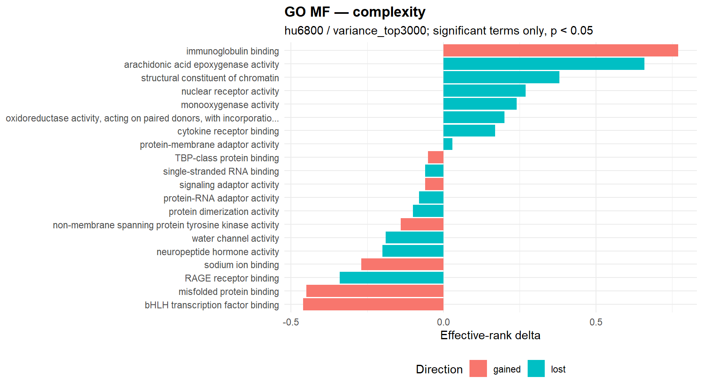
Entropy signal plot
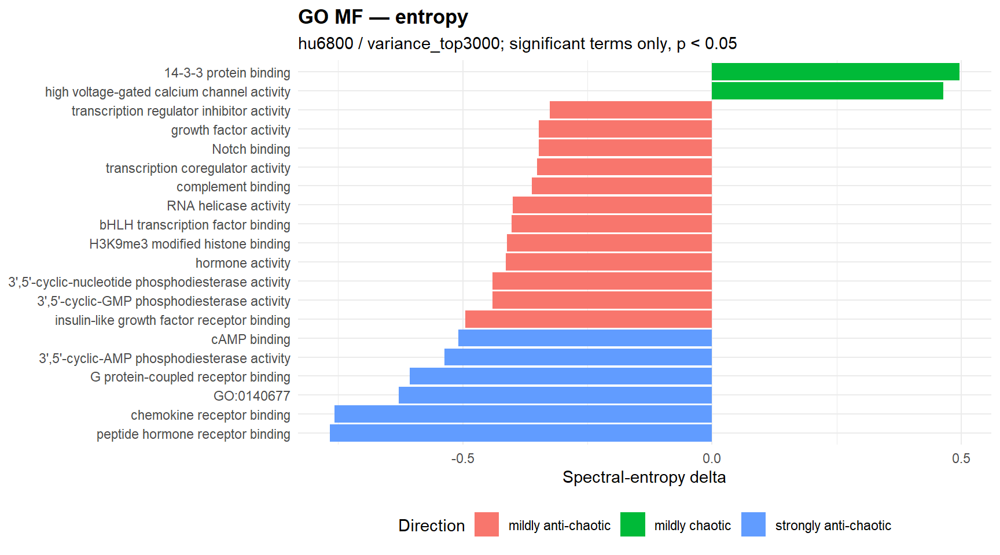
Significant complexity terms
| gene_set | semantic_block | n_shared_probes | effrank Δ | kappa Δ | direction | p_perm | status |
|---|---|---|---|---|---|---|---|
| immunoglobulin binding | protein-containing complex binding | 7 | 0.770 | 4026.720 | gained | <0.001 | ok |
| sodium ion binding | cation binding | 5 | -0.270 | 427.480 | gained | <0.001 | ok |
| cytokine receptor binding | signaling receptor binding | 16 | 0.170 | -330.590 | lost | <0.001 | ok |
| signaling adaptor activity | protein-macromolecule adaptor activity | 11 | -0.060 | 731.700 | gained | <0.001 | ok |
| TBP-class protein binding | transcription factor binding | 7 | -0.050 | 2945.780 | gained | <0.001 | ok |
| structural constituent of chromatin | molecular_function | 25 | 0.380 | -71.160 | lost | 0.010 | ok |
| non-membrane spanning protein tyrosine kinase activity | protein kinase activity | 10 | -0.140 | 747.320 | gained | 0.010 | ok |
| double-stranded DNA binding | DNA binding | 38 | -0.010 | 63.260 | gained | 0.010 | ok |
| arachidonic acid epoxygenase activity | oxidoreductase activity | 11 | 0.660 | -1050.470 | lost | 0.020 | ok |
| bHLH transcription factor binding | transcription factor binding | 6 | -0.460 | 806.730 | gained | 0.020 | ok |
| RAGE receptor binding | signaling receptor binding | 11 | -0.340 | -588.720 | lost | 0.020 | ok |
| nuclear receptor activity | signaling receptor activity | 16 | 0.270 | -191.520 | lost | 0.020 | ok |
| neuropeptide hormone activity | molecular function regulator activity | 9 | -0.200 | -4728.460 | lost | 0.020 | ok |
| water channel activity | channel activity | 5 | -0.190 | -372.790 | lost | 0.020 | ok |
| protein dimerization activity | protein binding | 31 | -0.100 | -66.630 | lost | 0.020 | ok |
| protein-RNA adaptor activity | protein-macromolecule adaptor activity | 5 | -0.080 | -223.130 | lost | 0.020 | ok |
| single-stranded RNA binding | RNA binding | 8 | -0.060 | -17334.580 | lost | 0.020 | ok |
| monooxygenase activity | oxidoreductase activity | 34 | 0.240 | -163.760 | lost | 0.030 | ok |
| GABA-A receptor activity | transmembrane signaling receptor activity | 8 | -0.020 | 19262.040 | gained | 0.030 | ok |
| GABA-gated chloride ion channel activity | gated channel activity | 8 | -0.020 | 19262.040 | gained | 0.030 | ok |
Significant entropy terms
| gene_set | semantic_block | n_shared_probes | spectral Δ | shannon Δ | spectral_direction | p_perm_spectral | p_perm_shannon | status |
|---|---|---|---|---|---|---|---|---|
| peptide hormone receptor binding | signaling receptor binding | 14 | -0.767 | 0.000 | strongly anti-chaotic | <0.001 | NA | ok |
| chemokine receptor binding | signaling receptor binding | 5 | -0.757 | 0.003 | strongly anti-chaotic | <0.001 | NA | ok |
| cAMP binding | carbohydrate derivative binding | 6 | -0.509 | 0.003 | strongly anti-chaotic | <0.001 | NA | ok |
| hormone activity | molecular function regulator activity | 42 | -0.414 | 0.000 | mildly anti-chaotic | <0.001 | NA | ok |
| bHLH transcription factor binding | transcription factor binding | 6 | -0.402 | -0.004 | mildly anti-chaotic | <0.001 | NA | ok |
| complement binding | protein binding | 5 | -0.362 | -0.001 | mildly anti-chaotic | <0.001 | NA | ok |
| growth factor activity | molecular function regulator activity | 42 | -0.347 | 0.003 | mildly anti-chaotic | <0.001 | NA | ok |
| transcription regulator inhibitor activity | molecular function regulator activity | 13 | -0.326 | -0.002 | mildly anti-chaotic | <0.001 | NA | ok |
| cytochrome-c oxidase activity | active transmembrane transporter activity | 8 | -0.253 | -0.003 | mildly anti-chaotic | <0.001 | NA | ok |
| cholesterol transfer activity | transporter activity | 6 | -0.216 | -0.004 | mildly anti-chaotic | <0.001 | NA | ok |
| GO:0140677 | molecular function regulator activity | 10 | -0.629 | -0.007 | strongly anti-chaotic | 0.010 | NA | ok |
| insulin-like growth factor receptor binding | signaling receptor binding | 9 | -0.495 | -0.006 | mildly anti-chaotic | 0.010 | NA | ok |
| CD4 receptor binding | signaling receptor binding | 5 | -0.320 | -0.003 | mildly anti-chaotic | 0.010 | NA | ok |
| calcium channel regulator activity | molecular function regulator activity | 15 | -0.292 | -0.001 | mildly anti-chaotic | 0.010 | NA | ok |
| phosphatase binding | enzyme binding | 7 | -0.277 | 0.000 | mildly anti-chaotic | 0.010 | NA | ok |
| mannose binding | small molecule binding | 7 | -0.262 | -0.002 | mildly anti-chaotic | 0.010 | NA | ok |
| metalloendopeptidase activity | peptidase activity | 25 | -0.228 | -0.002 | mildly anti-chaotic | 0.010 | NA | ok |
| transcription coregulator activity | protein-macromolecule adaptor activity | 25 | -0.351 | -0.001 | mildly anti-chaotic | 0.020 | NA | ok |
| sodium channel regulator activity | molecular function regulator activity | 8 | -0.296 | -0.004 | mildly anti-chaotic | 0.020 | NA | ok |
| GO:0140693 | protein-macromolecule adaptor activity | 14 | -0.284 | -0.001 | mildly anti-chaotic | 0.020 | NA | ok |
Terms significant in both engines
| gene_set | semantic_block | n_shared_probes | complexity_effrank Δ | complexity_direction | complexity_p_perm | entropy_spectral Δ | entropy_spectral_direction | entropy_p_perm_spectral | joint_rank_score |
|---|---|---|---|---|---|---|---|---|---|
| bHLH transcription factor binding | transcription factor binding | 6 | -0.460 | gained | 0.020 | -0.402 | mildly anti-chaotic | <0.001 | 309.352 |
| RAGE receptor binding | signaling receptor binding | 11 | -0.340 | lost | 0.020 | -0.243 | mildly anti-chaotic | 0.030 | 3.222 |
GO semantic clusters
| semantic_cluster_id | semantic_block_name | n_rows | n_terms | n_sig_complexity | n_sig_entropy_spectral | mean_shared_probes |
|---|---|---|---|---|---|---|
| MF_GO_0098772_3 | molecular function regulator activity | 14 | 7 | 1 | 2 | 32.714 |
| MF_GO_0042578_1 | phosphoric ester hydrolase activity | 6 | 3 | 0 | 3 | 11.333 |
| MF_GO_0005102_36 | signaling receptor binding | 2 | 1 | 1 | 1 | 11.000 |
| MF_GO_0008134_10 | transcription factor binding | 2 | 1 | 1 | 1 | 6.000 |
| MF_GO_0004672_1 | protein kinase activity | 10 | 5 | 1 | 0 | 27.800 |
| MF_GO_0019899_3 | enzyme binding | 8 | 4 | 0 | 1 | 44.500 |
| MF_GO_0005102_17 | signaling receptor binding | 6 | 3 | 0 | 1 | 7.000 |
| MF_GO_0005515_11 | protein binding | 6 | 3 | 0 | 1 | 7.000 |
| MF_GO_0019899_4 | enzyme binding | 6 | 3 | 0 | 1 | 13.667 |
| MF_GO_0030674_1 | protein-macromolecule adaptor activity | 6 | 3 | 0 | 1 | 41.333 |
| MF_GO_0097367_1 | carbohydrate derivative binding | 6 | 3 | 0 | 1 | 93.333 |
| MF_GO_0003677_8 | DNA binding | 4 | 2 | 1 | 0 | 21.500 |
| MF_GO_0003723_3 | RNA binding | 4 | 2 | 1 | 0 | 7.500 |
| MF_GO_0003824_4 | catalytic activity | 4 | 2 | 0 | 1 | 17.000 |
| MF_GO_0005102_1 | signaling receptor binding | 4 | 2 | 0 | 1 | 12.000 |
| MF_GO_0005102_2 | signaling receptor binding | 4 | 2 | 0 | 1 | 65.000 |
| MF_GO_0005515_4 | protein binding | 4 | 2 | 0 | 1 | 6.500 |
| MF_GO_0005515_61 | protein binding | 4 | 2 | 1 | 0 | 60.000 |
| MF_GO_0008134_5 | transcription factor binding | 4 | 2 | 1 | 0 | 8.500 |
| MF_GO_0008233_6 | peptidase activity | 4 | 2 | 0 | 1 | 29.000 |
Context summary
| engine | n_rows | n_gene_sets | n_significant_complexity | n_significant_entropy_spectral | median_shared_probes |
|---|---|---|---|---|---|
| complexity | 57 | 57 | 0 | 0 | 45.000 |
| entropy | 57 | 57 | 0 | 3 | 45.000 |
Complexity signal plot
No significant complexity terms available for plotting.
Entropy signal plot
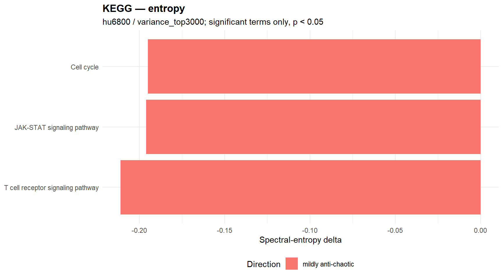
Significant complexity terms
No significant warehouse rows available for this section.
Significant entropy terms
| gene_set | semantic_block | n_shared_probes | spectral Δ | shannon Δ | spectral_direction | p_perm_spectral | p_perm_shannon | status |
|---|---|---|---|---|---|---|---|---|
| Cell cycle | NA | 34 | -0.195 | 0.001 | mildly anti-chaotic | 0.010 | NA | ok |
| T cell receptor signaling pathway | NA | 40 | -0.211 | 0.001 | mildly anti-chaotic | 0.030 | NA | ok |
| JAK-STAT signaling pathway | NA | 58 | -0.196 | 0.000 | mildly anti-chaotic | 0.030 | NA | ok |
Terms significant in both engines
No significant warehouse rows available for this section.
Context summary
| engine | n_rows | n_gene_sets | n_significant_complexity | n_significant_entropy_spectral | median_shared_probes |
|---|---|---|---|---|---|
| complexity | 13 | 13 | 0 | 0 | 80.000 |
| entropy | 13 | 13 | 0 | 0 | 80.000 |
Complexity signal plot
No significant complexity terms available for plotting.
Entropy signal plot
No significant entropy terms available for plotting.
Significant complexity terms
No significant warehouse rows available for this section.
Significant entropy terms
No significant warehouse rows available for this section.
Terms significant in both engines
No significant warehouse rows available for this section.
Skipped / inadmissible gene sets
These counts summarize chip-level gene-set admissibility failures. They are not interpreted as repeated comparison-level biological results.
| comparison | chip | filter_regime | gene_set_mode | engine | reason | n_skipped |
|---|---|---|---|---|---|---|
| BR/BRAD | hu35ksuba | limma | GO_BP | complexity | usable gene-set probes below biological admissibility threshold: 0 < 5 | 1147 |
| BR/BRAD | hu35ksuba | limma | GO_BP | complexity | usable gene-set probes below biological admissibility threshold: 1 < 5 | 609 |
| BR/BRAD | hu35ksuba | limma | GO_BP | complexity | usable gene-set probes below biological admissibility threshold: 2 < 5 | 260 |
| BR/BRAD | hu35ksuba | limma | GO_BP | complexity | usable gene-set probes below biological admissibility threshold: 3 < 5 | 97 |
| BR/BRAD | hu35ksuba | limma | GO_BP | complexity | usable gene-set probes below biological admissibility threshold: 4 < 5 | 39 |
| BR/BRAD | hu35ksuba | limma | GO_BP | entropy | usable gene-set probes below biological admissibility threshold: 0 < 5 | 1147 |
| BR/BRAD | hu35ksuba | limma | GO_BP | entropy | usable gene-set probes below biological admissibility threshold: 1 < 5 | 609 |
| BR/BRAD | hu35ksuba | limma | GO_BP | entropy | usable gene-set probes below biological admissibility threshold: 2 < 5 | 260 |
| BR/BRAD | hu35ksuba | limma | GO_BP | entropy | usable gene-set probes below biological admissibility threshold: 3 < 5 | 97 |
| BR/BRAD | hu35ksuba | limma | GO_BP | entropy | usable gene-set probes below biological admissibility threshold: 4 < 5 | 39 |
| BR/BRAD | hu35ksuba | limma | GO_MF | complexity | usable gene-set probes below biological admissibility threshold: 0 < 5 | 386 |
| BR/BRAD | hu35ksuba | limma | GO_MF | complexity | usable gene-set probes below biological admissibility threshold: 1 < 5 | 195 |
| BR/BRAD | hu35ksuba | limma | GO_MF | complexity | usable gene-set probes below biological admissibility threshold: 2 < 5 | 83 |
| BR/BRAD | hu35ksuba | limma | GO_MF | complexity | usable gene-set probes below biological admissibility threshold: 3 < 5 | 28 |
| BR/BRAD | hu35ksuba | limma | GO_MF | complexity | usable gene-set probes below biological admissibility threshold: 4 < 5 | 13 |
| BR/BRAD | hu35ksuba | limma | GO_MF | entropy | usable gene-set probes below biological admissibility threshold: 0 < 5 | 386 |
| BR/BRAD | hu35ksuba | limma | GO_MF | entropy | usable gene-set probes below biological admissibility threshold: 1 < 5 | 195 |
| BR/BRAD | hu35ksuba | limma | GO_MF | entropy | usable gene-set probes below biological admissibility threshold: 2 < 5 | 83 |
| BR/BRAD | hu35ksuba | limma | GO_MF | entropy | usable gene-set probes below biological admissibility threshold: 3 < 5 | 28 |
| BR/BRAD | hu35ksuba | limma | GO_MF | entropy | usable gene-set probes below biological admissibility threshold: 4 < 5 | 13 |
| BR/BRAD | hu35ksuba | limma | KEGG | complexity | usable gene-set probes below biological admissibility threshold: 0 < 10 | 6 |
| BR/BRAD | hu35ksuba | limma | KEGG | complexity | usable gene-set probes below biological admissibility threshold: 1 < 10 | 12 |
| BR/BRAD | hu35ksuba | limma | KEGG | complexity | usable gene-set probes below biological admissibility threshold: 2 < 10 | 9 |
| BR/BRAD | hu35ksuba | limma | KEGG | complexity | usable gene-set probes below biological admissibility threshold: 3 < 10 | 5 |
| BR/BRAD | hu35ksuba | limma | KEGG | complexity | usable gene-set probes below biological admissibility threshold: 4 < 10 | 6 |
| BR/BRAD | hu35ksuba | limma | KEGG | complexity | usable gene-set probes below biological admissibility threshold: 5 < 10 | 7 |
| BR/BRAD | hu35ksuba | limma | KEGG | complexity | usable gene-set probes below biological admissibility threshold: 6 < 10 | 5 |
| BR/BRAD | hu35ksuba | limma | KEGG | complexity | usable gene-set probes below biological admissibility threshold: 7 < 10 | 3 |
| BR/BRAD | hu35ksuba | limma | KEGG | complexity | usable gene-set probes below biological admissibility threshold: 8 < 10 | 3 |
| BR/BRAD | hu35ksuba | limma | KEGG | entropy | usable gene-set probes below biological admissibility threshold: 0 < 10 | 6 |
| BR/BRAD | hu35ksuba | limma | KEGG | entropy | usable gene-set probes below biological admissibility threshold: 1 < 10 | 12 |
| BR/BRAD | hu35ksuba | limma | KEGG | entropy | usable gene-set probes below biological admissibility threshold: 2 < 10 | 9 |
| BR/BRAD | hu35ksuba | limma | KEGG | entropy | usable gene-set probes below biological admissibility threshold: 3 < 10 | 5 |
| BR/BRAD | hu35ksuba | limma | KEGG | entropy | usable gene-set probes below biological admissibility threshold: 4 < 10 | 6 |
| BR/BRAD | hu35ksuba | limma | KEGG | entropy | usable gene-set probes below biological admissibility threshold: 5 < 10 | 7 |
| BR/BRAD | hu35ksuba | limma | KEGG | entropy | usable gene-set probes below biological admissibility threshold: 6 < 10 | 5 |
| BR/BRAD | hu35ksuba | limma | KEGG | entropy | usable gene-set probes below biological admissibility threshold: 7 < 10 | 3 |
| BR/BRAD | hu35ksuba | limma | KEGG | entropy | usable gene-set probes below biological admissibility threshold: 8 < 10 | 3 |
| BR/BRAD | hu35ksuba | limma | MSIGDB | complexity | usable gene-set probes below biological admissibility threshold: 3 < 10 | 2 |
| BR/BRAD | hu35ksuba | limma | MSIGDB | complexity | usable gene-set probes below biological admissibility threshold: 5 < 10 | 2 |
| BR/BRAD | hu35ksuba | limma | MSIGDB | complexity | usable gene-set probes below biological admissibility threshold: 6 < 10 | 3 |
| BR/BRAD | hu35ksuba | limma | MSIGDB | complexity | usable gene-set probes below biological admissibility threshold: 7 < 10 | 2 |
| BR/BRAD | hu35ksuba | limma | MSIGDB | complexity | usable gene-set probes below biological admissibility threshold: 8 < 10 | 1 |
| BR/BRAD | hu35ksuba | limma | MSIGDB | entropy | usable gene-set probes below biological admissibility threshold: 3 < 10 | 2 |
| BR/BRAD | hu35ksuba | limma | MSIGDB | entropy | usable gene-set probes below biological admissibility threshold: 5 < 10 | 2 |
| BR/BRAD | hu35ksuba | limma | MSIGDB | entropy | usable gene-set probes below biological admissibility threshold: 6 < 10 | 3 |
| BR/BRAD | hu35ksuba | limma | MSIGDB | entropy | usable gene-set probes below biological admissibility threshold: 7 < 10 | 2 |
| BR/BRAD | hu35ksuba | limma | MSIGDB | entropy | usable gene-set probes below biological admissibility threshold: 8 < 10 | 1 |
| BR/BRAD | hu35ksuba | variance_top3000 | GO_BP | complexity | usable gene-set probes below biological admissibility threshold: 0 < 5 | 47 |
| BR/BRAD | hu35ksuba | variance_top3000 | GO_BP | complexity | usable gene-set probes below biological admissibility threshold: 1 < 5 | 172 |
| BR/BRAD | hu35ksuba | variance_top3000 | GO_BP | complexity | usable gene-set probes below biological admissibility threshold: 2 < 5 | 305 |
| BR/BRAD | hu35ksuba | variance_top3000 | GO_BP | complexity | usable gene-set probes below biological admissibility threshold: 3 < 5 | 335 |
| BR/BRAD | hu35ksuba | variance_top3000 | GO_BP | complexity | usable gene-set probes below biological admissibility threshold: 4 < 5 | 313 |
| BR/BRAD | hu35ksuba | variance_top3000 | GO_BP | entropy | usable gene-set probes below biological admissibility threshold: 0 < 5 | 47 |
| BR/BRAD | hu35ksuba | variance_top3000 | GO_BP | entropy | usable gene-set probes below biological admissibility threshold: 1 < 5 | 172 |
| BR/BRAD | hu35ksuba | variance_top3000 | GO_BP | entropy | usable gene-set probes below biological admissibility threshold: 2 < 5 | 305 |
| BR/BRAD | hu35ksuba | variance_top3000 | GO_BP | entropy | usable gene-set probes below biological admissibility threshold: 3 < 5 | 335 |
| BR/BRAD | hu35ksuba | variance_top3000 | GO_BP | entropy | usable gene-set probes below biological admissibility threshold: 4 < 5 | 313 |
| BR/BRAD | hu35ksuba | variance_top3000 | GO_MF | complexity | usable gene-set probes below biological admissibility threshold: 0 < 5 | 12 |
| BR/BRAD | hu35ksuba | variance_top3000 | GO_MF | complexity | usable gene-set probes below biological admissibility threshold: 1 < 5 | 63 |
| BR/BRAD | hu35ksuba | variance_top3000 | GO_MF | complexity | usable gene-set probes below biological admissibility threshold: 2 < 5 | 108 |
| BR/BRAD | hu35ksuba | variance_top3000 | GO_MF | complexity | usable gene-set probes below biological admissibility threshold: 3 < 5 | 114 |
| BR/BRAD | hu35ksuba | variance_top3000 | GO_MF | complexity | usable gene-set probes below biological admissibility threshold: 4 < 5 | 89 |
| BR/BRAD | hu35ksuba | variance_top3000 | GO_MF | entropy | usable gene-set probes below biological admissibility threshold: 0 < 5 | 12 |
| BR/BRAD | hu35ksuba | variance_top3000 | GO_MF | entropy | usable gene-set probes below biological admissibility threshold: 1 < 5 | 63 |
| BR/BRAD | hu35ksuba | variance_top3000 | GO_MF | entropy | usable gene-set probes below biological admissibility threshold: 2 < 5 | 108 |
| BR/BRAD | hu35ksuba | variance_top3000 | GO_MF | entropy | usable gene-set probes below biological admissibility threshold: 3 < 5 | 114 |
| BR/BRAD | hu35ksuba | variance_top3000 | GO_MF | entropy | usable gene-set probes below biological admissibility threshold: 4 < 5 | 89 |
| BR/BRAD | hu35ksuba | variance_top3000 | KEGG | complexity | usable gene-set probes below biological admissibility threshold: 8 < 10 | 2 |
| BR/BRAD | hu35ksuba | variance_top3000 | KEGG | complexity | usable gene-set probes below biological admissibility threshold: 9 < 10 | 1 |
| BR/BRAD | hu35ksuba | variance_top3000 | KEGG | entropy | usable gene-set probes below biological admissibility threshold: 8 < 10 | 2 |
| BR/BRAD | hu35ksuba | variance_top3000 | KEGG | entropy | usable gene-set probes below biological admissibility threshold: 9 < 10 | 1 |
| BR/BRAD | hu6800 | limma | GO_BP | complexity | usable gene-set probes below biological admissibility threshold: 0 < 5 | 172 |
| BR/BRAD | hu6800 | limma | GO_BP | complexity | usable gene-set probes below biological admissibility threshold: 1 < 5 | 399 |
| BR/BRAD | hu6800 | limma | GO_BP | complexity | usable gene-set probes below biological admissibility threshold: 2 < 5 | 469 |
| BR/BRAD | hu6800 | limma | GO_BP | complexity | usable gene-set probes below biological admissibility threshold: 3 < 5 | 378 |
| BR/BRAD | hu6800 | limma | GO_BP | complexity | usable gene-set probes below biological admissibility threshold: 4 < 5 | 276 |
| BR/BRAD | hu6800 | limma | GO_BP | entropy | usable gene-set probes below biological admissibility threshold: 0 < 5 | 172 |
| BR/BRAD | hu6800 | limma | GO_BP | entropy | usable gene-set probes below biological admissibility threshold: 1 < 5 | 399 |
| BR/BRAD | hu6800 | limma | GO_BP | entropy | usable gene-set probes below biological admissibility threshold: 2 < 5 | 469 |
| BR/BRAD | hu6800 | limma | GO_BP | entropy | usable gene-set probes below biological admissibility threshold: 3 < 5 | 378 |
| BR/BRAD | hu6800 | limma | GO_BP | entropy | usable gene-set probes below biological admissibility threshold: 4 < 5 | 276 |
| BR/BRAD | hu6800 | limma | GO_MF | complexity | usable gene-set probes below biological admissibility threshold: 0 < 5 | 77 |
| BR/BRAD | hu6800 | limma | GO_MF | complexity | usable gene-set probes below biological admissibility threshold: 1 < 5 | 147 |
| BR/BRAD | hu6800 | limma | GO_MF | complexity | usable gene-set probes below biological admissibility threshold: 2 < 5 | 166 |
| BR/BRAD | hu6800 | limma | GO_MF | complexity | usable gene-set probes below biological admissibility threshold: 3 < 5 | 125 |
| BR/BRAD | hu6800 | limma | GO_MF | complexity | usable gene-set probes below biological admissibility threshold: 4 < 5 | 71 |
| BR/BRAD | hu6800 | limma | GO_MF | entropy | usable gene-set probes below biological admissibility threshold: 0 < 5 | 77 |
| BR/BRAD | hu6800 | limma | GO_MF | entropy | usable gene-set probes below biological admissibility threshold: 1 < 5 | 147 |
| BR/BRAD | hu6800 | limma | GO_MF | entropy | usable gene-set probes below biological admissibility threshold: 2 < 5 | 166 |
| BR/BRAD | hu6800 | limma | GO_MF | entropy | usable gene-set probes below biological admissibility threshold: 3 < 5 | 125 |
| BR/BRAD | hu6800 | limma | GO_MF | entropy | usable gene-set probes below biological admissibility threshold: 4 < 5 | 71 |
| BR/BRAD | hu6800 | variance_top3000 | GO_BP | complexity | usable gene-set probes below biological admissibility threshold: 0 < 5 | 25 |
| BR/BRAD | hu6800 | variance_top3000 | GO_BP | complexity | usable gene-set probes below biological admissibility threshold: 1 < 5 | 85 |
| BR/BRAD | hu6800 | variance_top3000 | GO_BP | complexity | usable gene-set probes below biological admissibility threshold: 2 < 5 | 220 |
| BR/BRAD | hu6800 | variance_top3000 | GO_BP | complexity | usable gene-set probes below biological admissibility threshold: 3 < 5 | 322 |
| BR/BRAD | hu6800 | variance_top3000 | GO_BP | complexity | usable gene-set probes below biological admissibility threshold: 4 < 5 | 333 |
| BR/BRAD | hu6800 | variance_top3000 | GO_BP | entropy | usable gene-set probes below biological admissibility threshold: 0 < 5 | 25 |
| BR/BRAD | hu6800 | variance_top3000 | GO_BP | entropy | usable gene-set probes below biological admissibility threshold: 1 < 5 | 85 |
| BR/BRAD | hu6800 | variance_top3000 | GO_BP | entropy | usable gene-set probes below biological admissibility threshold: 2 < 5 | 220 |
| BR/BRAD | hu6800 | variance_top3000 | GO_BP | entropy | usable gene-set probes below biological admissibility threshold: 3 < 5 | 322 |
| BR/BRAD | hu6800 | variance_top3000 | GO_BP | entropy | usable gene-set probes below biological admissibility threshold: 4 < 5 | 333 |
| BR/BRAD | hu6800 | variance_top3000 | GO_MF | complexity | usable gene-set probes below biological admissibility threshold: 0 < 5 | 18 |
| BR/BRAD | hu6800 | variance_top3000 | GO_MF | complexity | usable gene-set probes below biological admissibility threshold: 1 < 5 | 56 |
| BR/BRAD | hu6800 | variance_top3000 | GO_MF | complexity | usable gene-set probes below biological admissibility threshold: 2 < 5 | 79 |
| BR/BRAD | hu6800 | variance_top3000 | GO_MF | complexity | usable gene-set probes below biological admissibility threshold: 3 < 5 | 124 |
| BR/BRAD | hu6800 | variance_top3000 | GO_MF | complexity | usable gene-set probes below biological admissibility threshold: 4 < 5 | 98 |
| BR/BRAD | hu6800 | variance_top3000 | GO_MF | entropy | usable gene-set probes below biological admissibility threshold: 0 < 5 | 18 |
| BR/BRAD | hu6800 | variance_top3000 | GO_MF | entropy | usable gene-set probes below biological admissibility threshold: 1 < 5 | 56 |
| BR/BRAD | hu6800 | variance_top3000 | GO_MF | entropy | usable gene-set probes below biological admissibility threshold: 2 < 5 | 79 |
| BR/BRAD | hu6800 | variance_top3000 | GO_MF | entropy | usable gene-set probes below biological admissibility threshold: 3 < 5 | 124 |
| BR/BRAD | hu6800 | variance_top3000 | GO_MF | entropy | usable gene-set probes below biological admissibility threshold: 4 < 5 | 98 |
Interpretation note
These panels are intended to support exploratory biological reading of structurally characterized tumor states. Stronger interpretive priority should be given to signals that recur within a chip across filtering regimes, and then to patterns that recur across chips, engines, and semantic clusters. Results should not be interpreted as pooled chip-level or pooled filter-level evidence unless a later concordance module explicitly evaluates that recurrence.